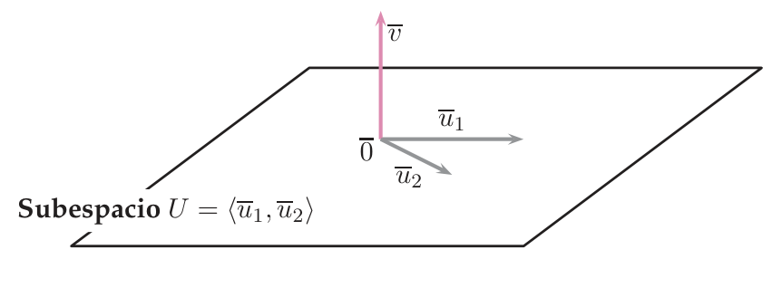
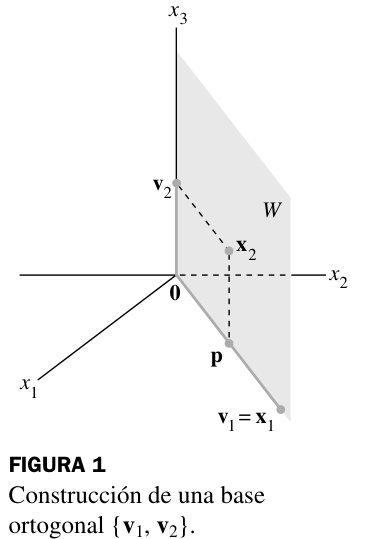
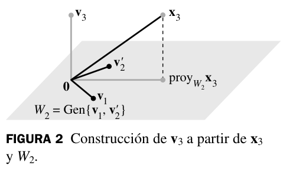
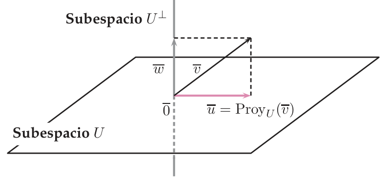
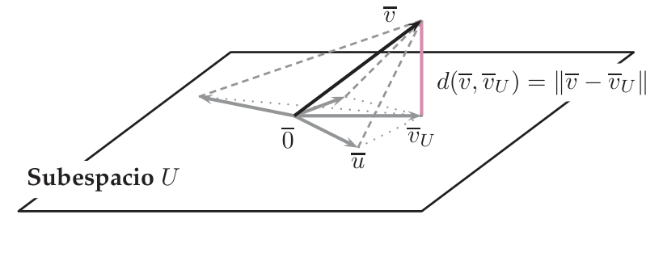

Producto escalar
Cómo medir longitudes, distancias y ángulos en cualquier espacio vectorial (no solo en $\mathbb R^2$ y $\mathbb R^3$): el producto escalar y su matriz de Gram, la norma, la ortogonalidad, el método de Gram-Schmidt para fabricar bases ortonormales, el suplementario ortogonal y la proyección ortogonal como «el punto más cercano».
0Antes de empezar U p.193
En $\mathbb R^2$ y $\mathbb R^3$ sabes medir: la longitud de $(3,4)$ es $5$, y dos flechas son perpendiculares si $u_1v_1+u_2v_2+u_3v_3=0$. Todo eso sale de una sola operación, el producto escalar. Este tema dice qué propiedades debe tener «una operación que mide» para que funcione en cualquier espacio vectorial (matrices, polinomios, funciones…) y qué se obtiene gratis: normas, distancias, ángulos, ortogonalidad y proyecciones. Lo sorprendente es que hay muchos productos escalares en el mismo espacio y que dos vectores pueden ser perpendiculares para uno y no para otro: lo que mide es el producto, no el espacio.
Qué necesitas saber ya
- Del tema 1.2: producto de matrices, traspuesta, matriz simétrica $A^t=A$, $(AB)^t=B^tA^t$.
- De los temas 2.1-2.3: subespacio, sistema generador, base, dimensión y coordenadas $X$ de un vector en una base; y de 2.4: suma directa $U\oplus U'$ y suplementario.
- Del tema 3.5: la matriz de cambio de base $Q$ (columnas = vectores de la base nueva escritos en la antigua) y la regla $X=QX'$.
- Del tema 4.1 (opcional): matrices congruentes $B=Q^tAQ$ (Def. 4.4, U p.147), que es la que aparece en el cambio de base de una matriz de Gram.
- Sistemas homogéneos y su espacio de soluciones (tema 1.4): casi todo lo de «subespacio ortogonal» acaba en resolver $AX=0$.
Mapa del tema
| Apartado | Qué contiene | Dónde |
|---|---|---|
| 1 Producto escalar | Def. 5.1, el estándar, ejemplos y contraejemplos, polinomios y matrices | U p.193-195 |
| 2 Matriz de Gram | $x\bullet y=X^tGY$, simétrica y definida positiva (Sylvester), $G'=Q^tGQ$, animación 2D | U p.195-199 |
| 3 Norma, distancia, ángulo | Normalizar, coseno, ortogonalidad, Pitágoras, Cauchy-Schwarz, ortogonal a un subespacio | U p.199-204 · L |
| 4 Sistemas ortogonales | Ortogonal / ortonormal, Teor. 5.2 (libres), Teor. 5.3 (coordenadas) | U p.204-207 |
| 5 Gram-Schmidt | Receta, Ejemplo 5.21, figura de Lay y animación 3D paso a paso | U p.207-209 · L §6.4 |
| 6 Suplementario ortogonal y proyección | $U^\perp$, $v=u+w$, fórmula (5.2), mejor aproximación (Teor. 5.4), animación 3D | U p.209-213 · L §6.3 |
| 7 Tabla Lay ↔ U | Vocabulario y alcance (Lay solo trata el estándar) | L |
| 8 Ejercicios del libro | E 5.1–5.15 + 12 ejemplos propios + autoevaluación | E pp.161-173 · U p.238 |
| 9 Ejemplos de examen | 22 ejercicios de exámenes anteriores, por métodos, + ejemplos propios | X |
| 10 Chuleta | Fórmulas con hipótesis, lista de comprobación, errores frecuentes | — |
(a) ¿Es esta expresión / esta matriz un producto escalar? y calcular la matriz de Gram (E 5.1-5.2, 5.9, 5.11-5.13; X: Feb. 2023, Feb. 2022, Feb. 2019). (b) Norma, ángulo, distancia con un producto no estándar (E 5.3, 5.11; X Feb. 2018, Sept. 2022, Sept. 2025, Feb. 2024, Feb. 2026). (c) Sistema ortogonal / ortonormal y por qué siempre hay una base ortonormal (X Feb. 2026, Feb. 2025, Sept. 2018, Feb. 2019). (d) Gram-Schmidt (E 5.15 A; X Sept. 2019). (e) Subespacio ortogonal / suplementario ortogonal (E 5.5-5.8, 5.10; X Feb. 2017, Feb. 2018, Sept. 2019, Feb. 2022). (f) Proyección ortogonal y mínima distancia (E 5.14, 5.15; X Sept. 2017, Sept. 2025, Feb. 2020, Sept. 2024). Casi siempre vale 1 punto de los 10 del examen y suele ser la pregunta corta número 5.
propio- Si no dice qué producto, es el estándar $x\cdot y=x_1y_1+\dots+x_ny_n$ (U p.203, Ejemplo 5.16: «cuando no se especifica el producto escalar se considera el estándar»).
- U escribe $\bullet$ para un producto escalar cualquiera y $\cdot$ para el estándar; yo uso $\bullet$ en general y $\cdot$ solo cuando es el estándar.
- Los ejemplos numerados de U (aquí «Ejemplo 5.n») no se deben confundir con los ejercicios de E («Ejercicio 5.n»): son numeraciones distintas. U los llama a veces «Ejercicio 5.n» por error.
1El producto escalar: qué es y qué no es U p.194-195
Piensa en una regla de medir (el producto escalar) y en lo que mide con ella: la longitud de una flecha es «cuánto da la regla al medir la flecha consigo misma», $\|v\|^2=v\bullet v$, y el coseno del ángulo entre dos flechas sale de $u\bullet v$. Cada regla (cada producto) mide a su manera: en un plano con un suelo inclinado, lo que a un observador le parece un ángulo recto a otro no. Pero toda regla «honesta» cumple cinco condiciones razonables: es simétrica, lineal, y mide longitudes positivas (solo el vector nulo mide cero). Esas cinco condiciones son la definición.
Un producto escalar en un espacio vectorial real $V$ es una aplicación $\bullet:V\times V\to\mathbb R$ que cumple, para todos $u,v,w\in V$ y $\lambda\in\mathbb R$:
- Simetría: $u\bullet v=v\bullet u$.
- Homogeneidad: $(\lambda u)\bullet v=\lambda(u\bullet v)$.
- Aditividad: $(u+v)\bullet w=u\bullet w+v\bullet w$.
- Positiva: $u\bullet u\ge0$.
- Definida: $u\bullet u=0\iff u=0$.
Un espacio vectorial real con un producto escalar se llama espacio euclídeo. Por 1-3, es lineal también en la 2.ª variable ($u\bullet(\lambda v)=\lambda(u\bullet v)$, $u\bullet(v+w)=u\bullet v+u\bullet w$).
U p.194 L p.331 · 376$x\cdot y=x_1y_1+x_2y_2+\dots+x_ny_n=X^tY$. En $\mathbb R^3$: $(1,2,3)\cdot(4,-1,2)=4-2+6=8$. Cumple las cinco propiedades porque $x\cdot x=x_1^2+\dots+x_n^2$ es una suma de cuadrados: $\ge0$ y $=0$ solo si todas las coordenadas son $0$.
U p.194-195En $\mathbb R^2$, $x\bullet y=x_1y_1-x_2y_2$. Es simétrica y lineal, pero con $u=(0,1)$: $u\bullet u=0\cdot0-1\cdot1=-1\lt 0$. Falla la propiedad 4. Un solo contraejemplo basta para refutar.
U p.195En $V=\{ax+b\}$ (polinomios de grado $\le1$), $p\bullet q=\displaystyle\int_0^1p(x)q(x)\,dx$. Con $p=1+x$, $q=1-x$: $p\bullet q=\int_0^1(1-x^2)dx=\left[x-\tfrac{x^3}3\right]_0^1=\tfrac23$. Aquí «la longitud» de un polinomio es la de su gráfica «medida con una integral».
U p.195Las propiedades 1-3 se ven casi siempre a ojo; lo que decide es la positividad (4 y 5). Y la 5 es sutil: una forma como $x\bullet y=x_1y_1$ en $\mathbb R^2$ cumple 1-4, pero $(0,1)\bullet(0,1)=0$ con $(0,1)\neq0$: no es producto escalar. Para refutar: busca un vector (empieza por los de la base canónica) con $u\bullet u\lt 0$, o con $u\bullet u=0$ siendo $u\neq0$. Y no es argumento que «no sea el estándar»: hay infinitos productos escalares en $\mathbb R^n$.
propio2La matriz de Gram: un producto escalar «en una tabla» U p.195-199
Por la bilinealidad, saber $u\bullet v$ para cualquier par de vectores es lo mismo que saber $e_i\bullet e_j$ para los vectores de una base: el resto se reconstruye sumando. Esos $n^2$ números se ponen en una tabla, la matriz de Gram $G$. Es el «carnet de identidad» del producto escalar en esa base.
Si $B=\{e_1,\dots,e_n\}$ es una base de un espacio euclídeo $V$, la matriz de Gram del producto escalar en $B$ es $G=(g_{ij})$ con $g_{ij}=e_i\bullet e_j$. Si $X$ e $Y$ son las coordenadas de $x$ e $y$ en $B$: $$x\bullet y=X^tGY=\sum_{i,j}g_{ij}\,x_iy_j .$$
U p.196$G$ depende de la base elegida (aunque el producto sea el mismo); es simétrica ($g_{ij}=g_{ji}$, por la propiedad 1); y $g_{ii}=e_i\bullet e_i>0$. Pero no toda matriz simétrica con diagonal positiva es de Gram: la positividad exige más (siguiente cuadro).
U p.197- Estándar: $e_i\cdot e_j=1$ si $i=j$ y $0$ si no, así que $G=I$ (Ej. 5.4).
- Otro producto: $x\bullet y=4x_1y_1+x_1y_2+x_2y_1+9x_2y_2$. El coeficiente de $x_iy_j$ es $g_{ij}$: $G=\begin{pmatrix}4&1\cr1&9\end{pmatrix}$ (Ej. 5.5). Ahora $e_1\bullet e_1=4$ (así $\|e_1\|=2$) y $e_1\bullet e_2=1\ne0$: la base canónica ya no es ortogonal.
- Evaluar: con $u=(2,1)$, $v=(7,0)$ (Ej. 5.6): $GV=\begin{pmatrix}28\cr7\end{pmatrix}$ y $u\bullet v=U^t(GV)=2\cdot28+1\cdot7=63$. El estándar daría $14$.
$G$ define un producto escalar $x\bullet y=X^tGY$ si y solo si es simétrica (propiedad 1) y definida positiva: $X^tGX>0$ para todo $X\neq0$ (propiedades 4-5). Comprobación práctica, el criterio de Sylvester: todos los menores principales $\Delta_1=g_{11}$, $\Delta_2=\begin{vmatrix}g_{11}&g_{12}\cr g_{21}&g_{22}\end{vmatrix}$, …, $\Delta_n=|G|$ son $>0$. (Se estudia en el tema 6.3; aquí se usa como herramienta, o bien se completan cuadrados.)
U p.267 (tema 6.3) propio$G=\begin{pmatrix}2&3\cr3&1\end{pmatrix}$ es simétrica y con diagonal positiva, pero $\Delta_2=2-9=-7\lt 0$. Testigo: $x=(1,-1)$, $x\bullet x=2-3-3+1=-3\lt 0$. No es de Gram. (Sylvester tiene la última palabra: «simétrica y diagonal positiva» son condiciones necesarias, no suficientes.)
propioElige $G=\begin{pmatrix}a&b\cr b&c\end{pmatrix}$ y dos vectores (sus coordenadas en la base de $G$). El programa calcula $u\bullet v$, las normas, el ángulo y si son ortogonales, y dibuja los vectores con sus longitudes y ángulos reales para ese producto. Prueba los casos: con «Propio: (2,1,1) con u ⟂ v» los vectores $(1,0)$ y $(-1,2)$ son ortogonales aunque con el estándar no lo sean; con «No definida positiva» el programa te da el vector testigo $x\bullet x\le0$.
PCómo cambia $G$ al cambiar de base
Si $G$ y $G'$ son las matrices de Gram del mismo producto escalar en las bases $B$ y $B'$, y $Q$ es la matriz de cambio de base de $B'$ a $B$ (columnas: los vectores de $B'$ escritos en $B$, convenio del tema 3.5), entonces $$G'=Q^tGQ .$$ Es decir, $G'$ y $G$ son congruentes. Consecuencias: mismo rango (siempre $n$) y $\det G'=(\det Q)^2\det G$, y la congruencia por sí sola solo conserva el signo de $\det G$ (no su valor). Que ese signo sea positivo viene de que $G$ es definida positiva ($\Delta_n=|G|>0$); también se ve así: en una base ortonormal (Gram-Schmidt) $G=I$, luego en cualquier otra base $\det G=(\det Q)^2>0$.
Es un caso del cambio de base de cualquier forma bilineal ($A'=P^tAP$, Teor. 6.1): la matriz de Gram es la de una forma bilineal simétrica y definida positiva. Teoría y más ejemplos en el tema 6.1 (allí se desarrolla X Feb. 2022 (A1) ej. 5 sobre dos matrices de Gram: #ex-feb22a1-5).
U p.198Con $G=\begin{pmatrix}4&1\cr1&9\end{pmatrix}$ y $B'=\{(\tfrac12,0),(0,\tfrac13)\}$: $Q=\begin{pmatrix}\tfrac12&0\cr0&\tfrac13\end{pmatrix}$ y $$G'=Q^tGQ=\begin{pmatrix}\tfrac12&0\cr0&\tfrac13\end{pmatrix}\begin{pmatrix}4&1\cr1&9\end{pmatrix}\begin{pmatrix}\tfrac12&0\cr0&\tfrac13\end{pmatrix}=\begin{pmatrix}1&\tfrac16\cr\tfrac16&1\end{pmatrix}.$$ Con $u=(1,1)_{B'}$ y $v=(2,0)_{B'}$ (Ej. 5.8): $u\bullet v=(1,1)G'(2,0)^t=2\left(1+\tfrac16\right)=\tfrac73$. En la base nueva los vectores tienen norma 1 ($g'_{ii}=1$), pero siguen sin ser ortogonales ($g'_{12}=\frac16$).
U p.198-199Si el producto es el estándar y los vectores de la base nueva son las columnas de $Q$ (en la canónica, $G=I$), entonces $G'=Q^tIQ=Q^tQ$: tabla de productos escalares de los vectores de la base, y $\det G'=(\det Q)^2$. El ejercicio de examen con dos matrices de Gram del mismo producto en dos bases (Ene. 2022, ej. 5) está resuelto en el tema 4.1.
propioEl cambio de base de una aplicación lineal es $A'=Q^{-1}AQ$ (semejanza, tema 4.1); el de un producto escalar es $Q^tGQ$ (congruencia). No se mezclan: la semejanza conserva el determinante y la congruencia no (lo multiplica por $(\det Q)^2$). Además, $Q$ lleva los vectores de $B'$ por columnas: si los pones por filas obtendrás $QGQ^t$.
propio3Norma, distancia, ángulo y ortogonalidad U p.199-204 L §6.1 p.331-335
Una vez que tenemos $u\bullet v$ con las cinco propiedades, imitamos la geometría de siempre: la longitud es la raíz de $v\bullet v$; la distancia entre dos puntos es la longitud de su diferencia; el ángulo sale del coseno $\frac{u\bullet v}{\|u\|\|v\|}$ (que vale $0$ cuando son perpendiculares). La definición de la raíz tiene sentido justo por la propiedad 4, y que solo el $0$ mida $0$ viene de la 5.
- Norma (5.3): $\|v\|=\sqrt{v\bullet v}$. Propiedades: $\|\lambda v\|=|\lambda|\|v\|$ y $\|v\|=0\iff v=0$.
- Unitario / normalizar (5.4): $v$ es unitario si $\|v\|=1$; el normalizado de $v\ne0$ es $\dfrac{v}{\|v\|}$, que tiene norma $1$ y la misma dirección y sentido.
- Distancia (5.5): $d(u,v)=\|u-v\|$.
- Ángulo (5.6): $\cos(\widehat{u,v})=\dfrac{u\bullet v}{\|u\|\,\|v\|}$ ($u,v\neq0$).
- Ortogonales (5.7): $u\perp v\iff u\bullet v=0$. U la define para vectores no nulos, pero «por convenio» el vector nulo es ortogonal a todos ($0\bullet u=0$). Un vector $v$ es ortogonal a un conjunto si lo es a cada uno de sus vectores.
- Normas (Ej. 5.9): $\|e_1\|=\sqrt{4}=2$, $\|e_2\|=\sqrt9=3$ (la diagonal de $G$ son las normas al cuadrado).
- Polinomios (Ej. 5.10): con $p\bullet q=\int_0^1pq$, $\|1+x\|^2=\int_0^1(1+x)^2dx=\frac{7}3$, así que $\|1+x\|=\sqrt{7/3}$; y $\|1-x\|=\frac1{\sqrt3}$.
- Normalizar (Ej. 5.11-5.12): $(0,4,3)$ tiene norma $5$ y su normalizado es $(0,\frac45,\frac35)$; el de $1+x$ es $\frac{\sqrt{21}}{7}(1+x)$.
- Distancia (Ej. 5.13): en $\mathbb R^2$ estándar, $d((2,3),(5,1))=\|(-3,2)\|=\sqrt{13}$.
- Ángulo (Ej. 5.14): $\cos(1+x,1-x)=\dfrac{2/3}{\sqrt{7/3}\cdot\frac1{\sqrt3}}=\dfrac2{\sqrt7}$.
Desarrollando $\|u+v\|^2=(u+v)\bullet(u+v)=\|u\|^2+2\,u\bullet v+\|v\|^2$. Si $u\perp v$, queda $$\|u+v\|^2=\|u\|^2+\|v\|^2.$$ Es exactamente el teorema de Pitágoras, ahora válido en cualquier espacio euclídeo (y la demostración usa solo las propiedades 1-3).
U p.202-203 L p.334En todo espacio euclídeo: $\;|u\bullet v|\le\|u\|\,\|v\|\;$ (Cauchy-Schwarz) y $\;\|u+v\|\le\|u\|+\|v\|\;$ (triangular). La primera es lo que garantiza que el cociente de la Def. 5.6 está entre $-1$ y $1$, es decir, que existe un ángulo con ese coseno (U lo usa sin enunciarlo). Igualdad solo si $u$ y $v$ son proporcionales. Demostración corta (Lay): si $u\ne0$, la proyección de $v$ sobre $\langle u\rangle$ no puede ser más larga que $v$.
L p.379-380$u=(1,2,2)$, $v=(2,-1,2)$ con el estándar: $u\cdot v=2-2+4=4$, $\|u\|=\|v\|=3$. Cauchy-Schwarz: $4\le9$. Triangular: $u+v=(3,1,4)$, $\|u+v\|=\sqrt{26}\approx5{,}10\le3+3=6$. La igualdad no se da porque no son proporcionales.
propioVector ortogonal a un subespacio
$v\perp U$ si $v$ es ortogonal a un sistema generador de $U$ (y entonces lo es a todos los vectores de $U$, por linealidad). Figura 5.1 de U.

Hallar $x\in\mathbb R^3$ (estándar) ortogonal a $(1,2,1)$, $(0,1,-1)$, $(1,1,2)$: con $x=(a,b,c)$, $$\begin{cases}a+2b+c=0\cr b-c=0\cr a+b+2c=0\end{cases}\Longrightarrow x=(-3\alpha,\alpha,\alpha).$$ La solución no es única: es toda la recta $\langle(-3,1,1)\rangle$. (El rango de los tres vectores es $2$, por eso queda un parámetro; $\dim=3-2=1$.) Cada vector es una ecuación: «ortogonal a $k$ vectores» $=$ núcleo de la matriz con esos vectores por filas.
U p.203«Ortogonal a $u$» significa $u^tGX=0$, no $u^tX=0$. Con $G\ne I$ las ecuaciones de $U^\perp$ no son los coeficientes de la ecuación de $U$. Detalle en el Ejercicio 5.5 de abajo.
propio4Sistemas ortogonales y ortonormales U p.204-207 L §6.2 p.338-339
Una base ortogonal es un sistema de ejes perpendiculares (como las aristas de una caja). Con ejes así todo es fácil: las coordenadas de un vector se leen «proyectándolo» sobre cada eje, sin resolver ningún sistema, y la matriz de Gram es diagonal. Si además cada eje mide $1$ (ortonormal), $G=I$ y las cuentas son las del estándar.
Sea $S=\{u_1,\dots,u_p\}$ en un espacio euclídeo. $S$ es:
- ortogonal si $u_i\bullet u_j=0$ para $i\ne j$ y $u_i\neq0$ para todo $i$;
- ortonormal si es ortogonal y $\|u_i\|=1$ para todo $i$;
- normalizado si $\|u_i\|=1$ para todo $i$ (sin pedir ortogonalidad).
Una base con esas propiedades es una base ortogonal / ortonormal / normalizada. Si $B$ es base ortogonal, $G$ es diagonal; si es ortonormal, $G=I$; y en una base normalizada $g_{ii}=1$ (U p.206). Normalizar cada vector de un sistema ortogonal da uno ortonormal.
U p.204-206- Ni ortogonal ni normalizado: $\{(1,2,3,4),(4,3,2,1),(1,0,1,0)\}$ en $\mathbb R^4$: $(1,2,3,4)\cdot(4,3,2,1)=20\ne0$ y las normas no son $1$ (Ej. 5.18).
- Normalizado pero no ortogonal (Ej. 5.19): hay que comprobar las dos cosas por separado.
- Funciones (Ej. 5.20): $\{1,\operatorname{sen}x,\cos x\}$ es ortogonal con $f\bullet g=\int_{-\pi}^{\pi}fg\,dx$ (las integrales cruzadas son $0$ por la simetría de las funciones impares); normalizando: $\left\{\frac1{\sqrt{2\pi}},\frac{\operatorname{sen}x}{\sqrt\pi},\frac{\cos x}{\sqrt\pi}\right\}$ (normas $\sqrt{2\pi},\sqrt\pi,\sqrt\pi$).
Todo sistema ortogonal es linealmente independiente. Por qué: si $\sum c_iu_i=0$, multiplicando escalarmente por $u_k$ se anulan todos los términos menos $c_k\,u_k\bullet u_k$, y $u_k\bullet u_k>0$ (porque $u_k\neq0$), luego $c_k=0$. En particular, $n$ vectores ortogonales en un espacio de dimensión $n$ son base sin más comprobaciones.
U p.206 L p.338Si $\{u_1,\dots,u_n\}$ es una base ortogonal de $V$, para todo $x\in V$: $$x=\sum_{i=1}^n\frac{x\bullet u_i}{u_i\bullet u_i}\,u_i ,\qquad\text{es decir}\qquad c_i=\frac{x\bullet u_i}{u_i\bullet u_i}.$$ Si la base es ortonormal, $c_i=x\bullet u_i$. Sin ecuaciones: se multiplica $x=\sum c_ju_j$ por $u_i$ y solo sobrevive $c_i\,u_i\bullet u_i$.
U p.207 L p.339$u_1=(1,1)$, $u_2=(1,-1)$ son ortogonales ($1-1=0$) y no nulos: base ortogonal. Coordenadas de $x=(5,1)$: $c_1=\frac{5+1}{2}=3$, $c_2=\frac{5-1}2=2$, y en efecto $3(1,1)+2(1,-1)=(5,1)$. Comparado con resolver el sistema $c_1+c_2=5$, $c_1-c_2=1$, no hay sistema que resolver.
propio(i) Usar $c_i=x\bullet u_i$ con una base ortogonal sin normalizar (falta dividir entre $u_i\bullet u_i$). (ii) Aplicar el Teorema 5.3 a una base que no es ortogonal: da un vector equivocado. (iii) Olvidar «$u_i\ne0$» al probar que un sistema es ortogonal (la solución oficial de varios exámenes lo omite). (iv) «$G=I$ porque es el estándar»: solo en una base ortonormal.
propio5Gram-Schmidt: fabricar una base ortogonal U p.207-209 L §6.4 p.354-359
Tienes tres varillas $u_1,u_2,u_3$ que no son perpendiculares y quieres tres perpendiculares que sigan «abarcando» lo mismo. Paso 1: te quedas con la primera. Paso 2: a la segunda le quitas su sombra sobre la primera (la parte que va en la dirección de $e_1$); lo que sobra es perpendicular a $e_1$. Paso 3: a la tercera le quitas las sombras sobre $e_1$ y sobre $e_2$ (ahora sí se pueden restar por separado porque $e_1\perp e_2$). Al final, si quieres longitud $1$, divides cada una entre su norma.
Dada una base (o un sistema libre) $\{u_1,\dots,u_p\}$ de un espacio euclídeo:
Paso 1 — ortogonalizar: $$e_1=u_1,\qquad e_2=u_2-\frac{u_2\bullet e_1}{e_1\bullet e_1}e_1,\qquad e_3=u_3-\frac{u_3\bullet e_1}{e_1\bullet e_1}e_1-\frac{u_3\bullet e_2}{e_2\bullet e_2}e_2,\ \dots$$ $$e_k=u_k-\sum_{i\lt k}\frac{u_k\bullet e_i}{e_i\bullet e_i}\,e_i .$$ Paso 2 — normalizar: $e_k'=e_k/\|e_k\|$. Resultado: $\{e_k\}$ ortogonal y $\{e_k'\}$ ortonormal, con $\langle e_1,\dots,e_k\rangle=\langle u_1,\dots,u_k\rangle$ para cada $k$. Consecuencia: todo espacio euclídeo de dimensión finita posee bases ortonormales.
U p.207-208 L p.354-355- Comprueba que el sistema es libre (si no, en algún paso saldrá $e_k=0$).
- $e_1=u_1$. Para cada $k$ calcula las sombras de $u_k$ sobre los $e_i$ ya ortogonalizados (no sobre los $u_i$ originales) y réstalas.
- Control en cada paso: $e_k\bullet e_i=0$ para todo $i\lt k$.
- Para evitar fracciones puedes reescalar cada $e_i$ a un múltiplo entero: la ortogonalidad no cambia y, al normalizar, el factor desaparece.
- Normaliza al final (o no, si solo piden base ortogonal).
- $e_1=u_1=(1,0,1)$, $e_1\cdot e_1=2$.
- $e_2$. $u_2\cdot e_1=1$, así que $e_2=(1,1,0)-\frac12(1,0,1)=\left(\frac12,1,-\frac12\right)$. Control: $e_2\cdot e_1=\frac12-\frac12=0$ ✓; $e_2\cdot e_2=\frac32$.
- $e_3$. $u_3\cdot e_1=2$ y $u_3\cdot e_2=-1$: $e_3=(0,0,2)-\frac22(1,0,1)-\frac{-1}{3/2}\left(\frac12,1,-\frac12\right)=\left(-\frac23,\frac23,\frac23\right)$. Control: $e_3\cdot e_1=-\frac23+\frac23=0$ ✓, $e_3\cdot e_2=-\frac13+\frac23-\frac13=0$ ✓.
- Normalizar: $\|e_1\|=\sqrt2$, $\|e_2\|=\sqrt{3/2}$, $\|e_3\|=\frac2{\sqrt3}$: $$\tfrac1{\sqrt2}(1,0,1),\quad\left(\tfrac{\sqrt6}6,\tfrac{\sqrt6}3,-\tfrac{\sqrt6}6\right),\quad\left(-\tfrac{\sqrt3}3,\tfrac{\sqrt3}3,\tfrac{\sqrt3}3\right).$$


Avanza con «Siguiente» y mira el dibujo: en el paso 2 aparece la sombra de $u_2$ sobre $e_1$ y el resto $e_2$ (con su ángulo recto rojo); en el paso 3 se resta la sombra sobre el plano $\langle e_1,e_2\rangle$ y queda $e_3$ perpendicular a él; el paso 4 normaliza. Empieza con el sistema del Ejemplo 5.21; con «Dependiente (falla)» verás por qué Gram-Schmidt exige un sistema libre. Si tu navegador no admite 3D, quedan los números.
P(i) Proyectar $u_3$ sobre $u_1,u_2$ originales en vez de sobre $e_1,e_2$ (solo vale si ya eran ortogonales). (ii) Normalizar «a medias» y luego usar la fórmula con $e_i\bullet e_i$ equivocado (si $e_i$ ya es unitario, $e_i\bullet e_i=1$ y se simplifica; si no, no). (iii) Olvidar que con un producto no estándar los $\bullet$ y las normas usan $G$. (iv) Responder «la canónica» a «calcula una base ortonormal a partir de esta base»: es ortonormal solo con el estándar y no muestra el método.
propio6Suplementario ortogonal y proyección ortogonal U p.209-213 L §6.1 p.334 · §6.3 p.347-353
Un plano $U$ en $\mathbb R^3$ y un punto $v$ fuera de él. Si dejas caer una plomada desde $v$ hasta el plano, el pie de la plomada es la proyección ortogonal $u=\operatorname{Proy}_U(v)$ (la «sombra» al mediodía) y la cuerda de la plomada, $w=v-u$, es perpendicular al plano: vive en $U^\perp$. Y es el punto de $U$ más cercano a $v$: cualquier otro punto del plano queda más lejos (Pitágoras). Eso es la «mejor aproximación» y es la base de los mínimos cuadrados (tema 5.4).
Dos subespacios $U,U'$ son ortogonales ($U\perp U'$) si todo vector de $U$ es ortogonal a todo vector de $U'$ (basta comprobarlo con sistemas generadores). El suplementario ortogonal $U^\perp$ de $U$ es el subespacio ortogonal a $U$ que además es su suplementario: $U\oplus U^\perp=V$. Se obtiene como $U^\perp=\{x\in V:\ x\perp U\}$ y, en dimensión finita, cumple $\dim U+\dim U^\perp=\dim V$ y $(U^\perp)^\perp=U$ (ambas consecuencia de $U\oplus U^\perp=V$).
U p.209 L p.334-335$U=\langle(1,0,2)\rangle$ con el estándar. $x\perp U\iff x\cdot(1,0,2)=0\iff x_1+2x_3=0$. Es un plano: $U^\perp=\langle(2,0,-1),(0,1,0)\rangle$, $\dim=2=3-1$. Ortogonal no es suplementario: la recta $\langle(0,1,0)\rangle$ es ortogonal a $U$, pero $U\oplus\langle(0,1,0)\rangle$ solo tiene dimensión $2$. Solo $U^\perp$ entero es a la vez ortogonal y suplementario; los demás subespacios ortogonales a $U$ son subespacios de $U^\perp$.
U p.209-210- Toma un sistema generador $\{u_1,\dots,u_p\}$ de $U$ (o una base).
- Escribe una ecuación por generador: $u_i^tG\,X=0$ (con el estándar, $G=I$: $u_i\cdot x=0$). Es el sistema homogéneo con las filas $u_i^tG$.
- Resuélvelo: sus soluciones son $U^\perp$, de dimensión $n-\operatorname{rang}$. Si $U$ viene por ecuaciones (estándar), los coeficientes de cada ecuación son generadores de $U^\perp$.
Como $V=U\oplus U^\perp$, todo $v\in V$ se escribe de forma única como $v=u+w$ con $u\in U$, $w\in U^\perp$. El vector $u=\operatorname{Proy}_U(v)$ es la proyección ortogonal de $v$ sobre $U$ (y $w=\operatorname{Proy}_{U^\perp}(v)$). Si $v\in U$, $\operatorname{Proy}_U(v)=v$; si $v\in U^\perp$, vale $0$. (U define la proyección para $v\ne0$ y $U$ subespacio propio; extenderla a $v=0$, donde $\operatorname{Proy}_U(0)=0$, o a $U=V$, donde $\operatorname{Proy}_V=\mathrm{Id}$, es inocuo.) Sobre una recta ($U=\langle u\rangle$): $$\operatorname{Proy}_u(v)=\frac{v\bullet u}{u\bullet u}\,u .$$

Si $\{e_1,\dots,e_p\}$ es una base ortogonal de $U$, $$\operatorname{Proy}_U(v)=\sum_{i=1}^p c_i\,e_i,\qquad c_i=\frac{v\bullet e_i}{e_i\bullet e_i}\quad(\text{coeficientes de Fourier}).$$ Si la base es ortonormal, $c_i=v\bullet e_i$. La suma solo funciona con base ortogonal: si la que te dan no lo es, haz primero Gram-Schmidt.
U p.212Con $p\bullet q=\int_0^1pq$: $\operatorname{Proy}_{1-x}(1+x)=\dfrac{(1+x)\bullet(1-x)}{(1-x)\bullet(1-x)}(1-x)=\dfrac{2/3}{1/3}(1-x)=2-2x$. Comprobación: $(1+x)-(2-2x)=-1+3x$ y $(-1+3x)\bullet(1-x)=\int_0^1(-1+4x-3x^2)dx=-1+2-1=0$ ✓.
U p.212Sea $U$ subespacio de un espacio euclídeo y $v\in V$. El vector $v_U=\operatorname{Proy}_U(v)$ es el punto de $U$ más próximo a $v$: $\|v-v_U\|\le\|v-x\|$ para todo $x\in U$ (con igualdad solo si $x=v_U$), y $v-v_U\perp U$. La distancia de $v$ a $U$ es $d(v,U)=\|v-v_U\|=\|\operatorname{Proy}_{U^\perp}v\|$. Por qué: para $x\in U$, $v-x=(v-v_U)+(v_U-x)$ con el primer sumando en $U^\perp$ y el segundo en $U$; por Pitágoras $\|v-x\|^2=\|v-v_U\|^2+\|v_U-x\|^2\ge\|v-v_U\|^2$.

Aplicación: resolver por mínimos cuadrados un sistema incompatible $AX=B$ es exactamente este teorema con $U=\langle\operatorname{Col}A\rangle$: tema 5.4 (E 5.34).
U p.213 L p.350Cambia $v$ y la dirección $d$. La flecha verde es la sombra $p$; el segmento rojo $w=v-p$ forma un ángulo recto con la recta. Mueve el deslizador $\alpha$: el punto morado se desplaza por la recta y su distancia a $v$ crece; el mínimo está en $\alpha=0$ (Teorema 5.4). Con «$v\perp d$» la sombra es nula.
PAquí $U=\langle u_1,u_2\rangle$ es un plano. El programa ortogonaliza la base (Gram-Schmidt) y suma las dos «sombras»: el camino verde son los dos términos de la fórmula (5.2). El residuo rojo $w$ es perpendicular al plano (paralelo a la recta gris, que es $U^\perp$). Con los deslizadores $\alpha,\beta$ mueves un punto $q$ del plano y compruebas que su distancia a $v$ solo es mínima en $p$. Empieza con el Ejercicio 5.14 de E.
P- Con la normal: si $U:\ ax+by+cz=0$ (estándar), $n=(a,b,c)$ y $U^\perp=\langle n\rangle$. Entonces $\operatorname{Proy}_Uv=v-\dfrac{v\cdot n}{n\cdot n}\,n$ y $d(v,U)=\dfrac{|v\cdot n|}{\|n\|}$ (un solo producto escalar).
- Con una base ortogonal: Gram-Schmidt sobre los generadores y fórmula (5.2). Sirve en cualquier dimensión y con cualquier producto.
- Control: $v-\operatorname{Proy}_Uv$ es ortogonal a los generadores de $U$.
$\operatorname{Proy}_Uv=\operatorname{Proy}_{u_1}v+\operatorname{Proy}_{u_2}v$ solo si $u_1\perp u_2$. Con generadores no ortogonales la suma da un vector equivocado (el control $v-p\perp U$ falla). Es el error número uno de los exámenes de proyección.
propio7Tabla Lay ↔ U: vocabulario y alcance L cap. 6 p.331-383
Lay explica muy bien la geometría (figuras, ejemplos con números), pero casi siempre con el producto estándar $u\cdot v=u^tv$. U trabaja con un producto escalar cualquiera y su matriz de Gram $G$: en el examen manda U. Úsalo para entender la idea; en cuanto el enunciado traiga una matriz $G$, aplica la receta de U.
| Concepto | U (oficial) | Lay |
|---|---|---|
| Producto escalar | Def. 5.1 (5 propiedades) en cualquier $V$ real; p.194 | §6.1: solo $u\cdot v=u^tv$ en $\mathbb R^n$ (Teor. 1, p.331); §6.7: «producto interior» $\langle u,v\rangle$ con los mismos axiomas (p.376-377) |
| Matriz de Gram y cambio de base | Def. 5.2 (p.196), Teor. 5.1 $G'=Q^tGQ$ (p.198) | No la trata. Lo más cercano: Ej. 1 de §6.7, $\langle u,v\rangle=4u_1v_1+5u_2v_2$ (producto con pesos) |
| Norma, normalizar, distancia | Def. 5.3-5.5 (p.199-201) | «longitud», «vector unitario», «distancia» (p.331-333) |
| Ángulo | Def. 5.6 (p.201); se usa en ejercicios | p.335 (opcional) |
| Pitágoras | p.202-203 (desarrollo de $\|u+v\|^2$) | Teor. 2 (p.334) |
| Cauchy-Schwarz, triangular | No figuran en §5.1 | §6.7, Teor. 16 (p.379) y 17 (p.380) |
| Ortogonal / ortonormal, libre | Def. 5.9 (p.204), Teor. 5.2 (p.206) | «conjunto ortogonal», Teor. 4 (p.338) |
| Coordenadas en base ortogonal | Teor. 5.3 (p.207) | Teor. 5 (p.339), $c_j=\frac{y\cdot u_j}{u_j\cdot u_j}$ |
| Gram-Schmidt | §5.1.5 (p.207-208), Ej. 5.21 | §6.4, Teor. 11 (p.355), Figs. 1-2 (p.354-355); además factorización QR (Teor. 12, p.356-357), que en U pertenece a §5.2 |
| Complemento ortogonal $U^\perp$ | Def. 5.10 (p.209): es el suplementario ortogonal; se calcula con ecuaciones | $W^\perp$ (p.334) y $(\operatorname{Fil}A)^\perp=\operatorname{Nul}A$, $(\operatorname{Col}A)^\perp=\operatorname{Nul}A^t$ (Teor. 3, p.335) |
| Proyección ortogonal | Def. 5.11-5.12, fórmula (5.2) (p.210-212) | $\hat y=\operatorname{proy}_Wy$, Teor. 8 (p.348); sobre una recta (p.340) |
| Mejor aproximación | Teor. 5.4 (p.213) | Teor. 9 (p.350) |
Si Lay y U difieren, manda U. Ejemplos: Lay llama «producto interior» a lo que U llama «producto escalar»; Lay escribe $\operatorname{Gen}\{\dots\}$ y $\operatorname{Nul}$/$\operatorname{Col}$ donde U escribe $\langle\dots\rangle$ y $\operatorname{Nuc}$/$\operatorname{Im}$; y en U se usan los «ejemplos» y «ejercicios» con numeración propia. Las figuras de U (5.1-5.3) y las de Lay (§6.4) son complementarias.
8Ejercicios del libro, resueltos E p.161-173
Los Ejercicios 5.1 a 5.15 de E son los de esta sección (el 5.16 en adelante, desde la p.174, es la sección 5.2). Orden de estudio recomendado (de fácil a difícil): 5.3 → 5.11 → 5.9 → 5.1 → 5.2 → 5.13 → 5.12 → 5.4 → 5.10 → 5.7 → 5.6 → 5.8 → 5.5 → 5.14 → 5.15. Abajo están en el orden del libro, agrupados por bloques. Pulsa «Mostrar soluciones» arriba para abrirlas todas.
- 5.1: la matriz de Gram dada no es definida positiva ($\det G=-1$): no existe ningún producto escalar con ella; además las opciones A y C son ambas ciertas.
- 5.2: el libro solo impone la simetría; falta comprobar la positividad (que sí se cumple para $\lambda=3$).
- 5.7: ninguna de las tres opciones es correcta (el libro las razona todas como falsas); la justificación de B olvida el subespacio $\{0\}$.
- 5.10: las opciones A y C son ciertas (el libro lo dice).
- 5.12: la $G$ dada es singular: no es producto escalar (el cálculo de $G'=Q^tGQ$ es correcto como forma bilineal).
- 5.13: notación ambigua en $g_{33}$ (expresión y resultado correctos). Los símbolos $\neq$, $\notin$, $\sqrt{\ }$ que faltan en el texto extraído de algunos enunciados no son erratas: el PDF es correcto.
Bloque I — ¿Es producto escalar? Matriz de Gram (E 5.1, 5.2, 5.4, 5.9, 5.11–5.13)
Ejercicio 5.1 — leer una matriz de Gram (errata de fondo) E p.162
Sea $E$ un espacio vectorial con un producto escalar tal que la matriz de Gram en una base $B=\{e_1,e_2,e_3\}$ es $G=\begin{pmatrix}1&0&1\cr0&1&1\cr1&1&1\end{pmatrix}$. Elegir la proposición correcta: A) $B$ no es ortonormal. B) $e_1$ es ortogonal al subespacio generado por $\{e_2,e_3\}$. C) Los vectores de $B$ son unitarios.
Qué se pide. Traducir cada frase a entradas de $G$.
- Leer $G$ (Def. 5.2): $g_{ij}=e_i\bullet e_j$. Diagonal: $e_i\bullet e_i=1$ para $i=1,2,3$. Fuera: $e_1\bullet e_2=0$, $e_1\bullet e_3=1$, $e_2\bullet e_3=1$.
- A) Cierta. Ortonormal $\iff G=I$. Aquí $g_{13}=1\ne0$: $e_1$ y $e_3$ no son ortogonales.
- B) Falsa. Ser ortogonal a $\langle e_2,e_3\rangle$ exige serlo a ambos generadores (Def. 5.8): $e_1\bullet e_2=0$ pero $e_1\bullet e_3=1\ne0$.
- C) Cierta. $\|e_i\|=\sqrt{g_{ii}}=1$.
Aviso 1 (ambigüedad). A y C son ciertas a la vez (el libro lo reconoce) aunque el enunciado pide «la» correcta.
Aviso 2 (errata de fondo). Esta $G$ no puede ser de Gram: $\Delta_1=1$, $\Delta_2=1$, $\Delta_3=\det G=-1\lt 0$ (Sylvester falla). Concretamente, con $x=e_1+e_2-e_3$, $X=(1,1,-1)^t$, $GX=(0,0,1)^t$ y $x\bullet x=X^tGX=-1\lt 0$: viola la propiedad 4. La lectura «formal» de A/B/C sigue siendo la que espera el libro. Con $g_{33}=3$ la matriz sí sería de Gram ($\Delta=1,1,1$) y entonces C sería falsa y solo A cierta.
Error típico: mirar solo la diagonal («unitarios») y concluir «ortonormal»; o comprobar la ortogonalidad a un subespacio con un solo generador. Teoría: U Def. 5.2 p.196; Def. 5.8 p.203; Def. 5.9 p.204.
Ejercicio 5.2 — ¿para qué $\lambda$ es producto escalar? (omisión del libro) E p.162
Si $f((x_1,x_2),(y_1,y_2))=(x_1\ x_2)\begin{pmatrix}2&1\cr\lambda-2&4\lambda\end{pmatrix}\begin{pmatrix}y_1\cr y_2\end{pmatrix}$ es un producto escalar en $\mathbb R^2$, el valor de $\lambda$: A) es único. B) es cualquiera. C) puede ser $\lambda=1$.
Qué se pide. Saber qué propiedades se cumplen siempre y cuáles imponen condición.
- Lo gratis. $f(x,y)=X^tAY$ es lineal en cada variable para todo $\lambda$: propiedades 2 y 3 de la Def. 5.1. Hay que imponer simetría y positividad.
- Simetría. $f(e_1,e_2)=a_{12}=1$ y $f(e_2,e_1)=a_{21}=\lambda-2$. Han de ser iguales: $\lambda=3$.
- Positividad (el libro la omite). Con $\lambda=3$, $A=\begin{pmatrix}2&1\cr1&12\end{pmatrix}$ y $f(x,x)=2x_1^2+2x_1x_2+12x_2^2=2\left(x_1+\frac12x_2\right)^2+\frac{23}2x_2^2\ge0$, y solo vale $0$ si $x_2=0$ y $x_1=0$. (Con Sylvester: $\Delta_1=2$, $\Delta_2=24-1=23>0$.) Por tanto $\lambda=3$ sí funciona.
- Opciones. A) cierta (la simetría fuerza $\lambda=3$ y el paso 3 asegura que sirve). B) falsa ($\lambda=0$ no es simétrica). C) falsa: con $\lambda=1$, $f(e_1,e_2)=1\ne-1=f(e_2,e_1)$.
Error típico: quedarse en «$A$ simétrica» y olvidar la positividad: sin el paso 3 no sabrías si hay algún $\lambda$ válido. Teoría: U Def. 5.1 p.194; p.197; Sylvester U p.267.
Ejercicio 5.4 — $G$ y $G'$ del mismo producto en bases distintas E p.163
Si $G$ y $G'$ son dos matrices asociadas al mismo producto escalar respecto de dos bases distintas $B$ y $B'$, entonces: A) $G$ y $G'$ son equivalentes. B) $\operatorname{rang}G\neq\operatorname{rang}G'$. C) $\det G=\det G'$.
Qué se pide. Consecuencias de $G'=Q^tGQ$.
- Relación: Teorema 5.1 (U p.198): $G'=Q^tGQ$ con $Q$ regular. Es decir, $G'$ es congruente con $G$ (Def. 4.4, U p.147).
- A) Cierta. Equivalentes: $G'=MGN$ con $M,N$ regulares (Def. 4.3, p.146). Basta $M=Q^t$, $N=Q$ (regulares: $\det Q^t=\det Q\ne0$).
- B) Falsa. Las matrices equivalentes tienen el mismo rango. (Además $G$ es definida positiva, luego regular: ambos rangos son $n$.)
- C) Falsa en general. $\det G'=\det Q^t\det G\det Q=(\det Q)^2\det G$, que solo coincide si $\det Q=\pm1$. Contraejemplo: estándar en $\mathbb R^2$, $B$ canónica ($G=I$), $B'=\{(2,0),(0,1)\}$: $G'=\begin{pmatrix}4&0\cr0&1\end{pmatrix}$, $\det G'=4\ne1$.
Observación: la congruencia por sí sola solo conserva el signo de $\det G$. Que el determinante de una Gram sea positivo se debe a que $G$ es definida positiva ($|G|=\Delta_n>0$), o a que en una base ortonormal $G=I$ y entonces $\det G=(\det Q)^2>0$ en cualquier otra.
Error típico: confundir con el cambio de base de un endomorfismo ($A'=Q^{-1}AQ$, que sí conserva el determinante). Teoría: U Teor. 5.1 p.198; Def. 4.3-4.4 p.146-147.
Ejercicio 5.9 — matriz métrica a partir de datos geométricos E p.167
En un espacio euclídeo $E$ de dimensión $3$ hay una base $B=\{e_1,e_2,e_3\}$ con $\|e_1\|=1$, $e_2\cdot e_2=1$, $\|e_3\|=\sqrt2$; $e_1\perp e_2$ y $2e_2-e_3$ es ortogonal a $e_1$ y a $e_3$. Calcular la matriz métrica en $B$.
Qué se pide. Los 6 números $g_{11},g_{22},g_{33},g_{12},g_{13},g_{23}$ (la matriz es simétrica).
- Diagonal (norma al cuadrado): $g_{11}=1$, $g_{22}=1$, $g_{33}=(\sqrt2)^2=2$.
- $g_{12}$: $e_1\perp e_2\Rightarrow g_{12}=0$.
- $g_{13}$: $0=(2e_2-e_3)\bullet e_1=2\,e_2\bullet e_1-e_3\bullet e_1=2\cdot0-g_{13}\Rightarrow g_{13}=0$.
- $g_{23}$: $0=(2e_2-e_3)\bullet e_3=2g_{23}-g_{33}=2g_{23}-2\Rightarrow g_{23}=1$.
- Resultado: $G_B=\begin{pmatrix}1&0&0\cr0&1&1\cr0&1&2\end{pmatrix}$. Coherencia: $\Delta=1,1,1>0$ ✓.
Error típico: poner $g_{33}=\sqrt2$ (es la norma, no su cuadrado). Teoría: U Def. 5.2 p.196; Def. 5.3 p.199.
Ejercicio 5.11 — Gram a partir de normas y un coseno E p.168
Dos vectores $u_1,u_2$ de un espacio euclídeo cumplen $\|u_1\|=1$, $\|u_2\|=3$ y $\cos(u_1,u_2)=\frac12$. Determinar la matriz $G$ del producto escalar en el subespacio generado por $\{u_1,u_2\}$.
Qué se pide. La matriz de Gram en la base $\{u_1,u_2\}$.
- Son base: si $u_2=cu_1$ el coseno sería $\pm1$; como vale $\frac12$ no son proporcionales, luego son base de su subespacio.
- Diagonal: $u_1\bullet u_1=1$, $u_2\bullet u_2=9$.
- Fuera (despejando de la Def. 5.6): $u_1\bullet u_2=\|u_1\|\|u_2\|\cos=1\cdot3\cdot\frac12=\frac32$.
- Resultado: $G=\begin{pmatrix}1&\frac32\cr\frac32&9\end{pmatrix}$. Control: $\Delta_1=1$, $\det G=9-\frac94=\frac{27}4>0$ ✓ (el ángulo es de $60^\circ$).
Error típico: poner las normas ($1$ y $3$) en la diagonal en vez de sus cuadrados. Teoría: U Def. 5.6 p.201; Def. 5.2 p.196.
Ejercicio 5.12 — $G'=Q^tGQ$ con una reordenación (errata de fondo) E p.169
La matriz asociada a un producto escalar en la base canónica es $G=\begin{pmatrix}1&1&0\cr1&1&0\cr0&0&1\end{pmatrix}$. Calcular la matriz de Gram $G'$ en la base $B'=\{(1,0,0),(0,0,1),(0,1,0)\}$.
Qué se pide. Aplicar el cambio de base de la Gram.
- Vía 1 (reordenar). $B'=\{e_1,e_3,e_2\}$: la canónica con $e_2,e_3$ intercambiados. Se intercambian las filas y columnas 2 y 3 de $G$: $g'_{12}=g_{13}=0$, $g'_{13}=g_{12}=1$, $g'_{22}=g_{33}=1$, $g'_{33}=g_{22}=1$, $g'_{23}=g_{32}=0$.
- Vía 2 (Teorema 5.1). $Q$ = vectores de $B'$ en columnas: $Q=\begin{pmatrix}1&0&0\cr0&0&1\cr0&1&0\end{pmatrix}$ y $$G'=Q^tGQ=\begin{pmatrix}1&0&1\cr0&1&0\cr1&0&1\end{pmatrix}.$$
Errata de fondo (no señalada por el libro). $G$ no es la matriz de un producto escalar: $\det G=0$ ($\Delta_2=1-1=0$). Con $x=(1,-1,0)\ne0$: $x\bullet x=X^tGX=0$, lo que contradice la propiedad 5. La forma $(x_1+x_2)^2+x_3^2$ es solo semidefinida positiva. El cálculo de $G'$ es correcto como cambio de base de una forma bilineal simétrica (tema 6.1), y $G'$ hereda el defecto ($\det G'=0$). Corrección mínima: $g_{22}=2$.
Error típico: usar $Q^{-1}GQ$ (semejanza) o poner los vectores por filas (aquí $Q$ es simétrica y no se nota, en general sí). Teoría: U Teor. 5.1 p.198.
Ejercicio 5.13 — determinante de una matriz de Gram E p.170
Calcular el determinante de la matriz de Gram del producto usual de $\mathbb R^3$ respecto de la base $\{(1,1,2),(3,1,1),(-2,-1,2)\}$.
Qué se pide. $\det G$; hay dos caminos.
- Vía 1 (calcular $G$). $g_{ij}=u_i\cdot u_j$: $g_{11}=6$, $g_{22}=11$, $g_{33}=(-2)(-2)+(-1)(-1)+2\cdot2=9$, $g_{12}=3+1+2=6$, $g_{13}=-2-1+4=1$, $g_{23}=-6-1+2=-5$. $G=\begin{pmatrix}6&6&1\cr6&11&-5\cr1&-5&9\end{pmatrix}$ y $\det G=6(99-25)-6(54+5)+1(-30-11)=444-354-41=49$.
- Vía 2 (Teorema 5.1). En la canónica $G=I$, así que $G=Q^tQ$ con $Q=\begin{pmatrix}1&3&-2\cr1&1&-1\cr2&1&2\end{pmatrix}$ (vectores en columnas). $\det Q=1(2+1)-3(2+2)-2(1-2)=3-12+2=-7$ y $\det G=(\det Q)^2=49$.
- Lectura. $\det Q\ne0$ confirma que es base; $\det G=(\det Q)^2>0$, como corresponde a una Gram (es definida positiva); menores $6,30,49>0$.
Nota. En la vía 1 el libro escribe el término $g_{33}$ como «$-2\cdot(-2)-1\cdot(-1)+2\cdot2$»; debe leerse $(-2)(-2)+(-1)(-1)+2\cdot2=4+1+4=9$. Es una notación ambigua, no un error: expresión y resultado son correctos.
Error típico: calcular $\det Q$ y olvidar elevar al cuadrado (daría $-7$, imposible en una Gram). Teoría: U Teor. 5.1 p.198; Ej. 5.4 p.197.
Bloque II — Norma y ortogonalidad (E 5.3, 5.10)
Ejercicio 5.3 — normalizar una matriz E p.163
En $\mathcal M_{2\times2}$ se define $\begin{pmatrix}a_{11}&a_{12}\cr a_{21}&a_{22}\end{pmatrix}\bullet\begin{pmatrix}b_{11}&b_{12}\cr b_{21}&b_{22}\end{pmatrix}=a_{11}b_{11}+a_{12}b_{12}+a_{21}b_{21}+a_{22}b_{22}$. Normalizar $\begin{pmatrix}1&2\cr1&-3\end{pmatrix}$.
Qué se pide. Dividir el «vector» (aquí una matriz) entre su norma.
- Idea. Normalizar es dividir entre la norma para obtener un vector de norma $1$ con la misma dirección (Def. 5.4). El producto dado es el estándar de $\mathbb R^4$ leyendo la matriz entrada a entrada.
- Norma (Def. 5.3): $\|A\|=\sqrt{A\bullet A}=\sqrt{1+4+1+9}=\sqrt{15}$.
- Normalizado: $\dfrac A{\sqrt{15}}=\begin{pmatrix}\frac1{\sqrt{15}}&\frac2{\sqrt{15}}\cr\frac1{\sqrt{15}}&-\frac3{\sqrt{15}}\end{pmatrix}$.
- Comprobación: $\left\|\frac A{\sqrt{15}}\right\|^2=\frac1{15}(A\bullet A)=1$ (homogeneidad).
Error típico: usar $\det A$ o $AA$ en vez del producto dado, u olvidar la raíz. Teoría: U Def. 5.3 p.199, Def. 5.4 p.200.
Ejercicio 5.10 — vector unitario ortogonal a dos vectores de $\mathbb R^4$ (dos respuestas válidas) E p.167-168
En $\mathbb R^4$ (estándar) existe, al menos, un vector $(x,y,z,t)$ de norma $1$ y perpendicular a $(1,2,3,0)$ y $(1,1,0,0)$ que verifica la ecuación: A) $x+3z=0$. B) $t=z=0$. C) $x=3z=-y$.
Qué se pide. Describir el conjunto de candidatos y ver qué ecuación admite algún unitario.
- Condiciones: $x+2y+3z=0$ y $x+y=0$; norma $1$: $x^2+y^2+z^2+t^2=1$.
- Resolver: $y=-x$, $x-2x+3z=0\Rightarrow x=3z$. Con $z=\alpha$, $t=\beta$: $(x,y,z,t)=(3\alpha,-3\alpha,\alpha,\beta)$, es decir $W=\langle(3,-3,1,0),(0,0,0,1)\rangle$ (¡$t$ es parámetro libre aunque no aparezca!). Norma $1$: $19\alpha^2+\beta^2=1$.
- A) Cierta. Con $x+3z=0$: $3\alpha+3\alpha=0\Rightarrow\alpha=0$, $\beta=\pm1$: existe $(0,0,0,\pm1)$.
- B) Falsa. $t=z=0\Rightarrow\alpha=\beta=0$: solo el vector nulo, que tiene norma $0\ne1$. (El libro dice «no tiene solución»: con precisión, «no tiene solución de norma 1».)
- C) Cierta. $x=3z$ y $x=-y$ describen exactamente $W$, así que todo unitario de $W$ las cumple: $\frac1{\sqrt{19}}(3,-3,1,0)$ (norma $\frac{19}{19}=1$) o $(0,0,0,1)$.
Aviso: A y C son ciertas (el libro lo dice): la pregunta no tiene respuesta única.
Error típico: olvidar la variable libre $t$. Teoría: U Ejemplo 5.16 p.203 (ortogonal a varios vectores); Def. 5.3 p.199.
Bloque III — Subespacios ortogonales y suplementario ortogonal (E 5.5–5.8)
Ejercicio 5.5 — $U^\perp$ con un producto no estándar E p.164
Se considera el producto escalar en $\mathbb R^3$ con matriz métrica $G=\begin{pmatrix}1&1&0\cr1&2&-1\cr0&-1&5\end{pmatrix}$. Calcular las ecuaciones paramétricas y la dimensión del suplementario ortogonal del subespacio $U:\ x+y+2z=0$.
Qué se pide. $U^\perp$ con este producto.
- Comprobación previa: $G$ es simétrica y $\Delta_1=1$, $\Delta_2=1$, $\Delta_3=4>0$: es un producto escalar.
- Base de $U$: una ecuación en $\mathbb R^3\Rightarrow\dim U=2$. Despejando $x=-y-2z$: $u_1=(1,-1,0)$, $u_2=(-2,0,1)$ (independientes).
- Dimensión: $U\oplus U^\perp=\mathbb R^3\Rightarrow\dim U^\perp=1$.
- Condiciones (Def. 5.8, con $G$): $v=(a,b,c)$ ha de cumplir $u_i^tGv=0$. Calculamos las filas $u_1^tG=(1,-1,0)G=(0,-1,1)$ y $u_2^tG=(-2,0,1)G=(-2,-3,5)$. Ecuaciones: $-b+c=0$ y $-2a-3b+5c=0$.
- Resolver: $c=b$; $-2a-3b+5b=0\Rightarrow a=b$. $U^\perp=\langle(1,1,1)\rangle$: paramétricas $x=\alpha$, $y=\alpha$, $z=\alpha$; dimensión 1.
- Comprobación: $(1,1,1)\notin U$ ($1+1+2=4\ne0$), coherente con $U\cap U^\perp=\{0\}$.
Error típico: usar el vector normal $(1,1,2)$ de la ecuación de $U$: solo vale con el estándar. Aquí $(1,1,2)G=(2,2,9)$ da $(2,2,9)\cdot(1,-1,0)=0$ pero $(2,2,9)\cdot(-2,0,1)=5\ne0$. Teoría: U Def. 5.8 p.203; Def. 5.10 p.209; Sylvester p.267.
Ejercicio 5.6 — repaso de intersección, unión, suma y un ortogonal E p.165
$L_1=\langle(1,0,0),(0,0,1)\rangle$ y $L_2=\langle(1,1,1)\rangle$ en $\mathbb R^3$. A) Demostrar que $L_1\cap L_2$ es subespacio (caracterización). B) Discutir si $L_1\cup L_2$ lo es. C) Ecuaciones cartesianas de $L_1+L_2$. D) Con el producto estándar, un subespacio ortogonal a $L_1$ y si es suplementario.
Qué se pide. A-C son repaso de los temas 2.1 y 2.4; D es de esta sección. Previo: $L_1=\{(\alpha,0,\beta)\}$ (plano $y=0$) y $L_2=\{(\gamma,\gamma,\gamma)\}$ (recta $x=y=z$).
- A. Caracterización (U (2.2), p.66): $0\in L_1\cap L_2$; si $u,v\in L_1\cap L_2$ y $\lambda,\mu\in\mathbb R$, $\lambda u+\mu v\in L_1$ (subespacio) y $\in L_2$, luego en la intersección. Concretamente $(\gamma,\gamma,\gamma)\in L_1\iff\gamma=0$: $L_1\cap L_2=\{0\}$.
- B. No es subespacio. Contraejemplo: $(0,0,1)\in L_1$ y $(1,1,1)\in L_2$; su diferencia $(-1,-1,0)$ no está en $L_1$ ($y\ne0$) ni en $L_2$ (componentes distintas). La unión solo es subespacio si uno contiene al otro.
- C. $L_1+L_2=\langle(1,0,0),(0,0,1),(1,1,1)\rangle$, y $\det\begin{pmatrix}1&0&1\cr0&0&1\cr0&1&1\end{pmatrix}=-1\ne0$: rango $3$, $L_1+L_2=\mathbb R^3$ (Grassmann: $2+1-0=3$). No hay ecuaciones cartesianas (ninguna restricción). Como $L_1\cap L_2=\{0\}$, la suma es directa: $L_2$ es suplementario de $L_1$ pero no ortogonal ($(1,1,1)\cdot(1,0,0)=1$).
- D. $v=(x,y,z)\perp L_1\iff v\cdot(1,0,0)=x=0$ y $v\cdot(0,0,1)=z=0$. Así $U=\{x=0,\ z=0\}=\langle(0,1,0)\rangle$ (paramétricas $x=0$, $y=\lambda$, $z=0$).
- ¿Suplementario? $L_1\cap U=\{0\}$ y $\dim L_1+\dim U=3$: $L_1\oplus U=\mathbb R^3$. Sí; siendo ortogonal y suplementario, es $L_1^\perp$ (único). (Matiz: los subespacios ortogonales a $L_1$ son exactamente $\{0\}$ y $\langle(0,1,0)\rangle$.)
Error típico: pensar que «suplementario» implica «ortogonal» ($L_2$ es suplementario de $L_1$ y no ortogonal); o decir «la unión en general no es subespacio» sin contraejemplo. Teoría: U p.66, p.91-97 (2.4); Def. 5.8 p.203; Def. 5.10 p.209.
Ejercicio 5.7 — ortogonales a un plano de $\mathbb R^3$ (errata: ninguna opción correcta) E p.166
En $\mathbb R^3$ con el producto estándar, un subespacio ortogonal a $U:\ x+2y-z=0$ cumple: A) es $\langle(1,2,3)\rangle$. B) puede tener dimensión $2$. C) es cualquier recta perpendicular a $U$.
Qué se pide. Decidir qué es un subespacio ortogonal a un plano.
- $U^\perp$. Con el estándar, los coeficientes de la ecuación dan el normal: $U^\perp=\langle(1,2,-1)\rangle$. Un subespacio ortogonal a $U$ es cualquiera contenido en $U^\perp$: $\{0\}$ o $U^\perp$ (dimensión $\le1$).
- A) Falsa. $(1,2,3)\cdot(1,0,1)=4\ne0$ ($(1,0,1)\in U$): no es ortogonal.
- B) Falsa. Si $V\perp U$, $U\cap V=\{0\}$ (un $w$ en ambos cumple $w\bullet w=0\Rightarrow w=0$), la suma es directa y $\dim U+\dim V\le3\Rightarrow\dim V\le1$.
- C) Falsa. Una recta perpendicular al plano que no pasa por el origen no es subespacio; y el único subespacio de dimensión $1$ ortogonal a $U$ es $\langle(1,2,-1)\rangle$.
Errata confirmada: ninguna opción es correcta (el libro razona las tres como falsas). Probablemente A debía ser $\langle(1,2,-1)\rangle$. Además la justificación de B dice «dimensión necesariamente 1»: olvida $\{0\}$; lo correcto es $\dim V\le1$.
Error típico: confundir «recta perpendicular» (afín) con «subespacio» (pasa por el origen). Teoría: U Def. 5.10 p.209; Ejemplo 5.22 p.209-210.
Ejercicio 5.8 — un ortogonal que no es el suplementario ortogonal E p.166
Calcular un subespacio ortogonal que no sea el suplementario ortogonal de $U=\langle(1,2,-3,0),(1,0,-1,0)\rangle$.
Qué se pide. Un subespacio estrictamente contenido en $U^\perp$. (Producto estándar de $\mathbb R^4$, convenio de U.)
- $\dim U=2$ (los generadores no son proporcionales).
- $U^\perp$: $(x,y,z,t)\cdot(1,2,-3,0)=x+2y-3z=0$ y $(x,y,z,t)\cdot(1,0,-1,0)=x-z=0$. De la 2.ª, $z=x$; en la 1.ª, $x+2y-3x=0\Rightarrow y=x$: $(a,a,a,t)$, $U^\perp=\langle(1,1,1,0),(0,0,0,1)\rangle$, $\dim=2=4-2$.
- Idea: $W\perp U\iff W\subseteq U^\perp$. Para que no sea el suplementario ortogonal basta $W\subsetneq U^\perp$, p. ej. de dimensión $1$ (entonces $\dim U+\dim W=3\lt 4$).
- Ejemplos: $W=\langle(1,1,1,1)\rangle$ (comprobación: $1+2-3+0=0$ y $1-1=0$), o $\langle(2,2,2,0)\rangle$, o $\{0\}$.
Error típico: proponer un vector ortogonal solo a uno de los generadores. Teoría: U Def. 5.10 p.209.
Bloque IV — Proyección, mínima distancia y Gram-Schmidt (E 5.14, 5.15)
Ejercicio 5.14 — mejor aproximación de un vector a un plano E p.171
Hallar la mínima distancia (mejor aproximación) del vector $v=(1,1,0)$ al subespacio $U=\langle(1,-1,0),(-1,0,1)\rangle$ y el vector $u\in U$ que la realiza.
Qué se pide. $u=\operatorname{Proy}_Uv$ y $\|v-u\|$ (Teorema 5.4). Puedes verlo en la animación 3D de la sección 6 (preset «E 5.14»).
- Por qué la proyección. Por el Teorema 5.4 (p.213), el vector de $U$ más cercano a $v$ es $v_U=\operatorname{Proy}_Uv$ y la distancia mínima es $\|v-v_U\|$.
- $U^\perp$: $(a,b,c)\cdot(1,-1,0)=a-b=0$ y $(a,b,c)\cdot(-1,0,1)=-a+c=0$: $U^\perp=\langle(1,1,1)\rangle$.
- Descomponer $(1,1,0)=\alpha(1,-1,0)+\beta(-1,0,1)+\gamma(1,1,1)$: $\alpha-\beta+\gamma=1$, $-\alpha+\gamma=1$, $\beta+\gamma=0$. Sumando: $3\gamma=2$, $\gamma=\frac23$; $\alpha=-\frac13$, $\beta=-\frac23$.
- Proyección: $v_U=-\frac13(1,-1,0)-\frac23(-1,0,1)=\left(\frac13,\frac13,-\frac23\right)$; $w=\gamma(1,1,1)=\left(\frac23,\frac23,\frac23\right)$.
- Distancia: $d(v,U)=\|w\|=\sqrt{\frac49\cdot3}=\frac2{\sqrt3}=\frac{2\sqrt3}3\approx1{,}155$.
- Vía rápida (comprobación). $w=\operatorname{Proy}_nv=\frac{v\cdot n}{n\cdot n}n=\frac23(1,1,1)$ con $n=(1,1,1)$, y $v_U=v-w$. Mismo resultado.
Error típico: proyectar $v$ sobre cada generador de $U$ y sumar: solo vale si son ortogonales (aquí $(1,-1,0)\cdot(-1,0,1)=-1\ne0$). Teoría: U Def. 5.11 p.210; Def. 5.12 p.211; Teor. 5.4 p.213.
Ejercicio 5.15 — Gram-Schmidt, coordenadas y proyección en $\mathbb R^4$ E p.172-173
Sea $U=\langle(1,0,-1,1),(2,0,3,-1)\rangle$ (estándar de $\mathbb R^4$). A) Base ortogonal $B_1$ de $U$. B) Base ortonormal $B_2$ de $U^\perp$. C) Coordenadas en $B_1$ de $(4,0,1,1)\in U$. D) Coordenadas en $B_2$ de $(4,5,-6,-10)\in U^\perp$. E) Proyección ortogonal de $(1,0,1,0)$ sobre $U$.
Qué se pide. Un recorrido completo por las herramientas del tema.
- A) Gram-Schmidt. $u_1=(1,0,-1,1)$, $u_2=(2,0,3,-1)$ (independientes). $e_1=u_1$; $u_2\cdot e_1=2-3-1=-2$, $e_1\cdot e_1=3$: $e_2=u_2+\frac23e_1=\left(\frac83,0,\frac73,-\frac13\right)$. Control: $e_2\cdot e_1=\frac83-\frac73-\frac13=0$ ✓. Multiplicando por $3$: $B_1=\{(1,0,-1,1),(8,0,7,-1)\}$.
- B) $U^\perp$. $x-z+t=0$ y $2x+3z-t=0$ ($\dim=4-2=2$). Sumando: $3x+2z=0$. Con $y$ libre y $x=2s$: $z=-3s$, $t=z-x=-5s$; solución $y(0,1,0,0)+s(2,0,-3,-5)$. Ya son ortogonales ($(0,1,0,0)\cdot(2,0,-3,-5)=0$), no hace falta Gram-Schmidt. Normas $1$ y $\sqrt{4+9+25}=\sqrt{38}$: $B_2=\left\{(0,1,0,0),\frac1{\sqrt{38}}(2,0,-3,-5)\right\}$.
- C) Teorema 5.3. $(4,0,1,1)=2u_1+u_2\in U$ ✓. $c_i=\frac{x\cdot e_i}{e_i\cdot e_i}$: $c_1=\frac{4-1+1}3=\frac43$, $c_2=\frac{32+7-1}{64+49+1}=\frac{38}{114}=\frac13$. Coordenadas $\left(\frac43,\frac13\right)_{B_1}$. Comprobación: $\frac43(1,0,-1,1)+\frac13(8,0,7,-1)=(4,0,1,1)$ ✓.
- D) Base ortonormal: $c_i=x\cdot e_i$. Está en $U^\perp$ ($4+6-10=0$, $8-18+10=0$). $c_1=5$; $c_2=\frac{8+18+50}{\sqrt{38}}=\frac{76}{\sqrt{38}}=2\sqrt{38}$. Coordenadas $(5,\,2\sqrt{38})_{B_2}$.
- E) Fórmula (5.2) con la base ortogonal $B_1$: $z=(1,0,1,0)$, $z\cdot e_1=1-1=0$; $z\cdot e_2=8+7=15$ y $e_2\cdot e_2=114$: $c_2=\frac{15}{114}=\frac5{38}$. $\operatorname{Proy}_Uz=\frac5{38}(8,0,7,-1)=\left(\frac{20}{19},0,\frac{35}{38},-\frac5{38}\right)$.
- Comprobación de E: $z-\operatorname{Proy}_Uz=\left(-\frac1{19},0,\frac3{38},\frac5{38}\right)=-\frac1{38}(2,0,-3,-5)\in U^\perp$ ✓. (Distancia de $z$ a $U$: $\frac{\sqrt{38}}{38}$.)
Error típico: aplicar Fourier con la base original $\{u_1,u_2\}$ (no ortogonal): daría un vector incorrecto. Teoría: U Teor. 5.3 p.207; §5.1.5 p.207-208; Ec. (5.2) p.212.
Ejemplos propios (dificultad creciente)
Propio 1 — comprobar los axiomas en $\mathbb R^2$ propio
¿Es $x\bullet y=2x_1y_1+x_1y_2+x_2y_1+x_2y_2$ un producto escalar en $\mathbb R^2$? ¿Y $x\circ y=x_1y_1-x_2y_2$?
- Forma matricial: $G=\begin{pmatrix}2&1\cr1&1\end{pmatrix}$ (el coeficiente de $x_iy_j$ va en la posición $(i,j)$).
- Propiedad 1: intercambiar $x\leftrightarrow y$ da la misma expresión ($G$ simétrica) ✓. 2-3: cada término es (constante)$\cdot x_iy_j$, lineal en $x$ ✓.
- 4-5: $x\bullet x=2x_1^2+2x_1x_2+x_2^2=x_1^2+(x_1+x_2)^2\ge0$, y vale $0$ $\iff x_1=0$ y $x_1+x_2=0\iff x=0$ ✓. Sí es producto escalar.
- $\circ$: $(0,1)\circ(0,1)=-1\lt 0$ viola la 4: no lo es (es el Ejemplo 5.2 de U).
Propio 2 — matriz $2\times2$ con parámetro propio
¿Para qué $a$ define $G=\begin{pmatrix}1&a\cr a&4\end{pmatrix}$ un producto escalar en $\mathbb R^2$?
- Simétrica para todo $a$.
- Definida positiva (Sylvester): $\Delta_1=1>0$; $\Delta_2=4-a^2>0\iff-2\lt a\lt 2$.
- Por qué falla en el borde: con $a=2$ y $x=(2,-1)$: $x\bullet x=4+2\cdot2\cdot2\cdot(-1)+4=0$ con $x\ne0$ (viola la 5).
Resultado: $a\in(-2,2)$. Con $|a|>2$ aparecen vectores con $x\bullet x\lt 0$.
Propio 3 — Sylvester en $3\times3$ con parámetro propio
¿Para qué $k$ es $G=\begin{pmatrix}1&1&0\cr1&2&1\cr0&1&k\end{pmatrix}$ matriz de Gram?
- Simétrica ✓. $\Delta_1=1$, $\Delta_2=2-1=1$, $\Delta_3=1(2k-1)-1(k-0)=k-1$.
- Definida positiva $\iff k>1$.
- Para $k=1$: $x=(1,-1,1)$ da $X^tGX=k-1=0$ con $x\ne0$: falla.
Propio 4 — producto integral en polinomios: Gram, norma y ángulo propio
En $\mathcal P_2$ (grado $\le2$) sea $p\bullet q=\int_{-1}^1p(x)q(x)\,dx$. (a) Justifica que es producto escalar. (b) Matriz de Gram en $\{1,x,x^2\}$. (c) Norma de $1+x$ y de $x^2$ y coseno del ángulo que forman.
- (a) Simetría ($pq=qp$) y linealidad (de la integral). Positividad: $p\bullet p=\int p^2\ge0$; si $\int_{-1}^1p^2=0$ con $p^2\ge0$ continua, $p\equiv0$ en $[-1,1]$, y un polinomio con infinitas raíces es el nulo ✓.
- (b) $\int_{-1}^1x^m\,dx=0$ si $m$ impar y $\frac2{m+1}$ si par: $G=\begin{pmatrix}2&0&\frac23\cr0&\frac23&0\cr\frac23&0&\frac25\end{pmatrix}$ ($\Delta=2,\frac43,\frac{32}{135}>0$ ✓).
- (c) $1+x\leftrightarrow(1,1,0)$, $x^2\leftrightarrow(0,0,1)$. $(1+x)\bullet x^2=g_{13}+g_{23}=\frac23$; $\|1+x\|^2=g_{11}+2g_{12}+g_{22}=2+\frac23=\frac83$, $\|1+x\|=\frac{2\sqrt6}3$; $\|x^2\|=\sqrt{2/5}=\frac{\sqrt{10}}5$. $\cos=\dfrac{2/3}{\frac{2\sqrt6}3\cdot\frac{\sqrt{10}}5}=\dfrac{\sqrt{15}}6\approx0{,}645$.
Propio 5 — cambio de base $G'=Q^tGQ$ propio
Con $G=\begin{pmatrix}2&1\cr1&1\end{pmatrix}$ (Propio 1) en la canónica, halla $G'$ en $B'=\{(1,0),(1,-2)\}$ y comprueba con $u=(1,1)_{B'}$, $w=(2,-1)_{B'}$.
- $Q=\begin{pmatrix}1&1\cr0&-2\end{pmatrix}$ (columnas = vectores de $B'$).
- $GQ=\begin{pmatrix}2&0\cr1&-1\end{pmatrix}$; $G'=Q^t(GQ)=\begin{pmatrix}1&0\cr1&-2\end{pmatrix}\begin{pmatrix}2&0\cr1&-1\end{pmatrix}=\begin{pmatrix}2&0\cr0&2\end{pmatrix}$.
- Lectura: $B'$ es ortogonal para este producto (aunque $(1,0)\cdot(1,-2)=1\ne0$ con el estándar). $\det G'=4=(\det Q)^2\det G=4\cdot1$ ✓.
- Comprobación: $u\bullet w=(1,1)G'(2,-1)^t=2(2-1)=2$. En canónicas: $u=Q(1,1)^t=(2,-2)$, $w=Q(2,-1)^t=(1,2)$ y $(2,-2)G(1,2)^t=(2,-2)\cdot(4,3)=2$ ✓.
Propio 6 — norma, ángulo y distancia con una $G$ no estándar propio
Con $G=\begin{pmatrix}2&1\cr1&1\end{pmatrix}$: normas de $e_1,e_2$, ángulo que forman, distancia entre ellos y un vector ortogonal a $e_1$.
- $e_1\bullet e_2=g_{12}=1$; $\|e_1\|=\sqrt2$, $\|e_2\|=1$.
- $\cos=\frac1{\sqrt2\cdot1}=\frac{\sqrt2}2$: ángulo $45^\circ$ (¡no $90^\circ$ como con el estándar!).
- $d(e_1,e_2)=\|(1,-1)\|=\sqrt{2-2+1}=1$.
- Ortogonal a $e_1$: $(1,0)G(a,b)^t=2a+b=0\Rightarrow(1,-2)$ (coherente con Propio 5); $\|(1,-2)\|=\sqrt{2-4+4}=\sqrt2$.
Propio 7 — Cauchy-Schwarz y desigualdad triangular L p.379-380
Con el estándar de $\mathbb R^3$, $u=(1,2,2)$, $v=(2,-1,2)$: comprueba $|u\cdot v|\le\|u\|\|v\|$ y $\|u+v\|\le\|u\|+\|v\|$. ¿Por qué garantiza Cauchy-Schwarz que la Def. 5.6 tiene sentido?
- $u\cdot v=4$, $\|u\|=\|v\|=3$: $4\le9$ ✓. $u+v=(3,1,4)$, $\|u+v\|=\sqrt{26}\approx5{,}10\le6$ ✓.
- Sentido del coseno: Cauchy-Schwarz da $-1\le\frac{u\bullet v}{\|u\|\|v\|}\le1$ en cualquier espacio euclídeo, luego existe un ángulo con ese coseno (U lo usa sin demostrarlo).
- La triangular se deduce: $\|u+v\|^2=\|u\|^2+2u\bullet v+\|v\|^2\le\|u\|^2+2\|u\|\|v\|+\|v\|^2=(\|u\|+\|v\|)^2$.
- Igualdad solo si son proporcionales (aquí no: $4\lt 9$).
Propio 8 — ortogonal a un subespacio con $G$ no estándar propio
En $\mathbb R^3$ con $G=\begin{pmatrix}1&1&0\cr1&2&1\cr0&1&2\end{pmatrix}$ (Propio 3 con $k=2$, definida positiva) halla $U^\perp$ para (a) $U=\langle(1,0,0)\rangle$, (b) $L_1=\langle(1,0,0),(0,0,1)\rangle$ y compáralo con el estándar.
- (a) $(1,0,0)G=(1,1,0)$, ecuación $x+y=0$: $U^\perp=\langle(-1,1,0),(0,0,1)\rangle$, $\dim2=3-1$. (Con el estándar sería $x=0$.)
- (b) $(1,0,0)G=(1,1,0)$ y $(0,0,1)G=(0,1,2)$: $x+y=0$, $y+2z=0\Rightarrow z=t$, $y=-2t$, $x=2t$: $L_1^\perp=\langle(2,-2,1)\rangle$. (Con el estándar, Ejercicio 5.6 D: $\langle(0,1,0)\rangle$.)
- Comprobación: $(2,-2,1)\notin L_1$ ($y\ne0$), luego $L_1\oplus L_1^\perp=\mathbb R^3$.
Moraleja: el ortogonal depende del producto escalar; cada condición es $u_i^tGX=0$, no $u_i^tX=0$.
Propio 9 — Gram-Schmidt en $\mathbb R^3$ reescalando para evitar fracciones propio
Ortonormaliza $\{(1,1,0),(1,0,1),(0,1,1)\}$ (estándar).
- $e_1=(1,1,0)$, $e_1\cdot e_1=2$.
- $e_2=(1,0,1)-\frac12(1,1,0)=\left(\frac12,-\frac12,1\right)$; reescalado, $e_2'=(1,-1,2)$ ($e_2'\cdot e_2'=6$). Control $e_1\cdot e_2'=0$ ✓.
- $e_3=(0,1,1)-\frac{(0,1,1)\cdot e_1}2e_1-\frac{(0,1,1)\cdot e_2'}6e_2'=(0,1,1)-\frac12(1,1,0)-\frac16(1,-1,2)=\left(-\frac23,\frac23,\frac23\right)$, o $e_3'=(-1,1,1)$. Controles: $e_3'\cdot e_1=0$, $e_3'\cdot e_2'=-1-1+2=0$ ✓.
- Normalizar: $$\left\{\frac1{\sqrt2}(1,1,0),\ \frac1{\sqrt6}(1,-1,2),\ \frac1{\sqrt3}(-1,1,1)\right\}.$$
Propio 10 — Gram-Schmidt en polinomios y mejor aproximación propio
Con $p\bullet q=\int_{-1}^1pq$: (a) ortogonaliza $\{1,x,x^2\}$; (b) halla el polinomio de grado $\le1$ más próximo a $x^3$ y la distancia.
- (a) $e_1=1$, $e_1\bullet e_1=2$. $e_2=x-\frac{\int x}{2}\cdot1=x$ ($\int_{-1}^1x=0$), $e_2\bullet e_2=\frac23$. $e_3=x^2-\frac{x^2\bullet1}2\cdot1-\frac{x^2\bullet x}{2/3}x=x^2-\frac13$, con $\|e_3\|^2=\int(x^4-\frac23x^2+\frac19)=\frac25-\frac49+\frac29=\frac8{45}$. Ortonormal: $\left\{\frac1{\sqrt2},\sqrt{\tfrac32}\,x,\tfrac{3\sqrt{10}}4\left(x^2-\tfrac13\right)\right\}$ (son, salvo constantes, los polinomios de Legendre).
- (b) Por el Teorema 5.4 es $\operatorname{Proy}_{\langle1,x\rangle}x^3$ con la base ortogonal $\{1,x\}$: $c_1=\frac{\int x^3}2=0$, $c_2=\frac{\int x^4}{2/3}=\frac{2/5}{2/3}=\frac35$. Proyección: $\frac35x$.
- Distancia: $\|x^3-\frac35x\|^2=\int(x^6-\frac65x^4+\frac9{25}x^2)=\frac27-\frac{12}{25}+\frac6{25}=\frac8{175}$, $d=\frac{2\sqrt{14}}{35}\approx0{,}214$.
Propio 11 — proyección sobre recta y plano de $\mathbb R^3$, descomposición y Pitágoras propio
(a) Proyecta $v=(1,2,3)$ sobre la recta $\langle(1,1,1)\rangle$. (b) Proyecta $v=(2,0,3)$ sobre el plano $U=\langle(1,0,1),(0,1,1)\rangle$. En ambos, descompón $v=u+w$, calcula la distancia mínima y comprueba Pitágoras. (Mismos datos que las animaciones del apartado 6.)
- (a) $d=(1,1,1)$: $u=\frac{v\cdot d}{d\cdot d}d=\frac63(1,1,1)=(2,2,2)$. $w=v-u=(-1,0,1)$, $w\cdot d=0$ ✓. Distancia $\|w\|=\sqrt2$. Pitágoras: $\|v\|^2=14=\|u\|^2+\|w\|^2=12+2$ ✓.
- (b) Base ortogonal de $U$ (los generadores no lo son: $(1,0,1)\cdot(0,1,1)=1$): $e_1=(1,0,1)$, $e_2=(0,1,1)-\frac12(1,0,1)=\left(-\frac12,1,\frac12\right)\to(-1,2,1)$.
- Fourier (5.2): $u=\frac{v\cdot e_1}2e_1+\frac{v\cdot e_2}6e_2=\frac52(1,0,1)+\frac16(-1,2,1)=\left(\frac73,\frac13,\frac83\right)$.
- $w=v-u=\left(-\frac13,-\frac13,\frac13\right)$, paralelo a la normal $n=(1,0,1)\times(0,1,1)=(-1,-1,1)$ ✓. Distancia $\|w\|=\frac1{\sqrt3}$; atajo $\frac{|v\cdot n|}{\|n\|}=\frac{|-2+3|}{\sqrt3}$ ✓.
- Pitágoras: $\|v\|^2=13=\|u\|^2+\|w\|^2=\frac{49+1+64}9+\frac39=\frac{117}9=13$ ✓.
Propio 12 — complemento ortogonal por ecuaciones y $\dim U+\dim U^\perp=n$ propio
En $\mathbb R^4$ (estándar): (a) $U=\langle(1,1,0,0),(0,1,1,1)\rangle$; (b) $W=\{x+y+z+t=0\}$. Halla $U^\perp$ y $W^\perp$ con ecuaciones, bases y dimensiones.
- (a) Generadores $\to$ ecuaciones: $x+y=0$ y $y+z+t=0$. Libres $z,t$: $y=-z-t$, $x=z+t$, $U^\perp=\langle(1,-1,1,0),(1,-1,0,1)\rangle$. $\dim U+\dim U^\perp=2+2=4$ ✓.
- (b) Ecuaciones $\to$ generadores: $W$ es justamente el conjunto de vectores ortogonales a $(1,1,1,1)$, así $W^\perp=\langle(1,1,1,1)\rangle$; $\dim W=3$, $3+1=4$ ✓.
- Regla (estándar): generadores de $U$ = filas de $A$ $\Rightarrow$ $U^\perp=\{AX=0\}$ (Lay: $(\operatorname{Fil}A)^\perp=\operatorname{Nul}A$); si $U$ viene por ecuaciones, $U^\perp$ está generado por los vectores de coeficientes.
Autoevaluación de U (capítulo 5) — ítems de este tema
- 1. «El producto escalar definido en un espacio vectorial siempre es único.» Falso. Hay infinitos (en $\mathbb R^2$: $G=I$, $G=\begin{pmatrix}4&1\cr1&9\end{pmatrix}$, …).
- 2. «El único vector que posee norma 0 es el vector neutro.» Verdadero. $\|v\|=0\iff v\bullet v=0\iff v=0$ (propiedad 5).
- 3. «Si dos vectores son ortogonales, entonces ninguno de ellos es el vector nulo.» Verdadero según U (la solución dice que la ortogonalidad se define para vectores no nulos, Def. 5.7). Ojo: en el mismo apartado U acepta «por convenio» que $0$ es ortogonal a todo vector; con ese convenio el ítem sería falso. Para el examen: la Def. 5.7 de U (vectores no nulos) y la respuesta «Verdadero».
- 4. «Para definir un producto escalar basta fijar una base y dar una matriz métrica en dicha base.» Verdadero (U), entendiendo «matriz métrica» como matriz de Gram válida: simétrica y definida positiva. La matriz depende de la base pero el producto es el mismo.
- 5. «La matriz métrica puede tener en la diagonal valores negativos.» Falso. $g_{ii}=e_i\bullet e_i>0$ (propiedades 4-5).
- 7. «Si dos subespacios $U,U'$ de un espacio euclídeo son ortogonales entonces $U+U'$ es suma directa.» Verdadero. Si $x\in U\cap U'$, $x\perp x$: $x\bullet x=0\Rightarrow x=0$. Luego $U\cap U'=\{0\}$ (caracterización de la suma directa, U p.97).
- 8. «No siempre es posible hallar una base ortonormal de un espacio euclídeo.» Falso. Gram-Schmidt (en dimensión finita siempre).
Los ítems 6 y 9 son de las secciones 5.2 y 5.3, y el 10 del 5.4.
U p.238-239, 313-3149Ejemplos de examen X
De los 24 exámenes escaneados (feb. 2017 – feb. 2026 y sept. 2017–2025), 22 ejercicios o apartados tienen el producto escalar como contenido principal. Se agrupan por método: A ¿es producto escalar? y matriz de Gram; B norma, distancia y ángulo; C sistemas ortogonales y ortonormales; D Gram-Schmidt; E subespacio ortogonal y suplementario; F proyección ortogonal. Las soluciones oficiales son breves y a veces tienen erratas: aquí se desarrolla el razonamiento completo (todo verificado con sympy) y se avisa de lo que falla en la oficial. Se usa siempre el producto estándar cuando el enunciado no dice otro (U p.203).
- Ene. 2022 (A), ej. 5 — matrices de Gram del mismo producto en dos bases (Teorema 5.1): tema 4.1, #ex-ene22a-5.
- Feb. 2023 (2.ª sem.), problema 7 (iv) — base ortonormal de $U=\langle E\rangle$: tema 2.3, #ex-feb23b. Nota de 5.1: con Gram-Schmidt sobre $\{(1,3,1),(3,8,2)\}$ sale $e_2=w_2-\frac{29}{11}w_1=\frac1{11}(4,1,-7)$, proporcional al $(-4,-1,7)$ de la oficial; base ortonormal $\{\frac1{\sqrt{11}}(1,3,1),\frac1{\sqrt{66}}(-4,-1,7)\}$. No se puede «extraer» de $E$ (ningún par de $E$ es ortogonal).
Método A — ¿Es un producto escalar? Matriz de Gram
Feb. 2023 (2.ª sem.), pregunta 5 — ¿define un producto escalar en $\mathbb R^4$? X Feb. 2023 (2.ª) P5
Estudiar si $(x_1,x_2,x_3,x_4)\bullet(y_1,y_2,y_3,y_4)=10x_1y_1-x_2y_2-7x_3y_4-7x_4y_3+x_3y_3+2x_4y_4$ define o no un producto escalar en $\mathbb R^4$.
Qué se pide. Comprobar la Def. 5.1; para decir «no» basta un contraejemplo (como U en el Ejemplo 5.2).
- Las tres primeras sí. La expresión es un polinomio con un término $x_iy_j$ en cada sumando: lineal en $x$ (propiedades 2-3); y simétrica porque los coeficientes de $x_3y_4$ y $x_4y_3$ son iguales ($-7$) y el resto son $x_iy_i$.
- Probar la 4. El término $-x_2y_2$ es negativo: con $u=(0,1,0,0)$, $u\bullet u=-1\lt 0$.
- Conclusión: falla la propiedad 4: no es producto escalar. (Otro testigo: $(0,0,1,1)$ da $1-14+2=-11\lt 0$.)
Error típico: (i) «No es producto escalar porque no es el usual»: hay infinitos. (ii) Escribir «$u\bullet u=-1\le0$»: «$\le0$» no refuta nada (el $0$ cumple $0\ge0$); hace falta $\lt 0$, o $=0$ con $u\ne0$. La oficial escribe «$\le0$»: el número es correcto, la desigualdad está mal elegida.
Feb. 2023 (1.ª sem.), pregunta 5 — matriz de Gram a partir de la expresión X Feb. 2023 (1.ª) P5
Calcule la matriz de Gram respecto de la base canónica del producto escalar de $\mathbb R^3$ dado por $(x_1,x_2,x_3)\bullet(y_1,y_2,y_3)=8x_1y_1-3x_1y_2-3x_2y_1+5x_2y_2+9x_3y_3$.
- Definición: $G=(g_{ij})$, $g_{ij}=e_i\bullet e_j$ (Def. 5.2), y $x\bullet y=X^tGY=\sum g_{ij}x_iy_j$ (en la canónica, coordenadas = componentes).
- $g_{ij}$ = coeficiente de $x_iy_j$ (método del Ejemplo 5.5 de U): $g_{11}=8$, $g_{12}=-3$, $g_{21}=-3$, $g_{22}=5$, $g_{33}=9$; los demás no aparecen: $0$.
- Comprobación directa: $e_1\bullet e_2$: solo sobrevive $-3x_1y_2=-3$ ✓. $$G=\begin{pmatrix}8&-3&0\cr-3&5&0\cr0&0&9\end{pmatrix}.$$
- Coherencia: simétrica, $g_{ii}>0$ (y $\Delta=8,31,279>0$).
Error típico: dividir entre $2$ los coeficientes cruzados como en una forma cuadrática ($-3x_1y_2-3x_2y_1$ ya están separados). Si la expresión trajera $-6x_1y_2$ y nada en $x_2y_1$, no sería simétrica ni producto escalar.
Feb. 2022 (tipo A), ejercicio 5 — Gram del estándar en otra base X Feb. 2022 (A) ej. 5
Calcule la matriz asociada al producto escalar estándar en $\mathbb R^3$ respecto de la base $\{(1,1,1),(2,1,1),(2,0,1)\}$.
- Es base: $\det\begin{pmatrix}1&2&2\cr1&1&0\cr1&1&1\end{pmatrix}=-1\ne0$.
- Tabla de productos ($g_{ij}=v_i\cdot v_j$, por simetría basta calcular 6): $v_1\cdot v_1=3$, $v_1\cdot v_2=2+1+1=4$, $v_1\cdot v_3=2+0+1=3$, $v_2\cdot v_2=6$, $v_2\cdot v_3=4+0+1=5$, $v_3\cdot v_3=5$. $$G'=\begin{pmatrix}3&4&3\cr4&6&5\cr3&5&5\end{pmatrix}.$$
- Otra vía (Teor. 5.1): $G'=Q^tIQ=Q^tQ$ con los vectores en columnas de $Q$. Mismo resultado (y $\det G'=(\det Q)^2=1$).
Error típico: calcular $QQ^t$ (filas por filas) o dar la identidad «porque es el estándar»: $G=I$ solo en una base ortonormal (U p.206).
Feb. 2019 (tipo A), problema c) — Gram a partir de $e_i\bullet e_j=ij$ X Feb. 2019 (A) pb. c)
En el espacio euclídeo $\mathbb R^4$ hay una base $B=\{e_1,\dots,e_4\}$ con $e_i\bullet e_j=i\cdot j$ para $i\ne j$ y $|e_i|^2=1+i^2$. Hallar la matriz de Gram en $B$.
- Definición: $g_{ij}=e_i\bullet e_j$.
- Fuera de la diagonal ($i\ne j$): $g_{ij}=ij$: $g_{12}=2$, $g_{13}=3$, $g_{14}=4$, $g_{23}=6$, $g_{24}=8$, $g_{34}=12$ (y simétricos).
- Diagonal: $g_{ii}=\|e_i\|^2=1+i^2$: $2,5,10,17$. $$G=\begin{pmatrix}2&2&3&4\cr2&5&6&8\cr3&6&10&12\cr4&8&12&17\end{pmatrix}.$$
- Control: simétrica y $g_{ii}>0$. (Curiosidad: $G=I+ww^t$ con $w=(1,2,3,4)^t$, así $X^tGX=\|X\|^2+(w\cdot X)^2>0$: los datos son coherentes.)
Error típico: poner la norma $\sqrt{1+i^2}$ en la diagonal, o poner $i\cdot i=i^2$ olvidando que la regla $ij$ es solo para $i\ne j$.
Método B — Norma, distancia y ángulo
Feb. 2018 (tipo A), ejercicio 5 — coseno del ángulo (estándar) X Feb. 2018 (A) ej. 5
Calcule el coseno del ángulo que forman $(1,2,3)$ y $(1,1,5)$ en $\mathbb R^3$ con el producto escalar estándar.
- Fórmula (Def. 5.6): $\cos=\dfrac{u\cdot v}{\|u\|\|v\|}$.
- $u\cdot v=1+2+15=18$; $\|u\|=\sqrt{14}$; $\|v\|=\sqrt{27}=3\sqrt3$.
- $\cos=\dfrac{18}{3\sqrt{42}}=\dfrac6{\sqrt{42}}=\dfrac{\sqrt{42}}7\approx0{,}926$ (ángulo $\approx22{,}2^\circ$; positivo, agudo).
La oficial deja $\frac{1+2+15}{\sqrt{1+4+9}\sqrt{1+1+25}}$ sin simplificar (vale en examen).
Error típico: olvidar las raíces de las normas (dividir entre $14\cdot27$).
Sept. 2022, ejercicio 5 — norma de $u_1-u_2$ con la Gram en la base $\{u_1,u_2\}$ X Sept. 2022 ej. 5
$\{u_1,u_2\}$ es una base de $\mathbb R^2$ con un producto escalar cuya matriz de Gram tiene por filas $(1,\frac32)$ y $(\frac32,10)$. Hallar la norma de $u_1-u_2$.
- La Gram es en la base $\{u_1,u_2\}$: $u_1\bullet u_1=1$, $u_1\bullet u_2=\frac32$, $u_2\bullet u_2=10$. No hace falta saber quiénes son $u_1,u_2$.
- Vía propiedades: $(u_1-u_2)\bullet(u_1-u_2)=u_1\bullet u_1-2\,u_1\bullet u_2+u_2\bullet u_2=1-3+10=8$.
- Vía matricial: coordenadas $(1,-1)$: $\begin{pmatrix}1&-1\end{pmatrix}\begin{pmatrix}1&\frac32\cr\frac32&10\end{pmatrix}\begin{pmatrix}1\cr-1\end{pmatrix}=8$.
- $\|u_1-u_2\|=\sqrt8=2\sqrt2$ (también $d(u_1,u_2)$).
Aviso sobre la oficial: escribe «$(u_1-u_2)\cdot(u_1-u_2)=\sqrt{\dots}=\sqrt8$», mezclando el producto escalar (que vale $8$) con la norma ($\sqrt8$). El resultado es correcto.
Error típico: usar las componentes de $u_1,u_2$ como si fuera la canónica, o el producto estándar ($\|(1,-1)\|=\sqrt2$, mal).
Sept. 2025, pregunta 6 — norma con una matriz de Gram $3\times3$ X Sept. 2025 P6
En $\mathbb R^3$ se define un producto escalar cuya matriz de Gram en la base canónica es $\begin{pmatrix}1&1&0\cr1&2&-1\cr0&-1&5\end{pmatrix}$. Calcule la norma del vector $(1,1,2)$.
- $u\bullet u=U^tGU$ (en la canónica las coordenadas son las componentes).
- $GU=\begin{pmatrix}1+1+0\cr1+2-2\cr0-1+10\end{pmatrix}=\begin{pmatrix}2\cr1\cr9\end{pmatrix}$; $U^t(GU)=2+1+18=21$.
- $\|u\|=\sqrt{21}$. (Comprobación: $G$ es definida positiva, menores $1,1,4$.)
Error típico: usar el estándar ($1+1+4=6$) u olvidar la raíz.
Feb. 2024 (2.ª sem.), pregunta 5 — norma con Gram (enunciado defectuoso) X Feb. 2024 (2.ª) P5
En $\mathbb R^3$ se define un producto escalar cuya matriz de Gram en la base canónica es $G=\begin{pmatrix}2&3&1\cr3&1&0\cr1&0&2\end{pmatrix}$. Calcule la norma del vector $(1,0,2)$.
- $GU=\begin{pmatrix}2+0+2\cr3+0+0\cr1+0+4\end{pmatrix}=\begin{pmatrix}4\cr3\cr5\end{pmatrix}$, $U^tGU=4+0+10=14$.
- $\|(1,0,2)\|=\sqrt{14}$ (coincide con la oficial).
Aviso (error del enunciado). Esa $G$ no puede ser de Gram: con $w=(1,-1,0)$, $W^tGW=\begin{pmatrix}1&-1&0\end{pmatrix}\begin{pmatrix}-1\cr2\cr1\end{pmatrix}=-3\lt 0$, violando la propiedad 4. Pasa las dos comprobaciones de U p.197 (simétrica, $g_{ii}>0$): no son suficientes. (Sylvester: menores $2,-7,-15$.) El cálculo pedido sale igual, pero conviene señalarlo.
Error típico: creer que «simétrica con diagonal positiva» basta para que sea de Gram.
Feb. 2026 (2.ª sem.), pregunta 5 — norma en $\mathcal M_{2\times2}$ con $\operatorname{traza}(A^tB)$ X Feb. 2026 (2.ª) P5
En $\mathcal M_{2\times2}$ se define $A\bullet B=\operatorname{traza}(A^tB)$. Calcule la norma de $\begin{pmatrix}5&-9\cr2&1\end{pmatrix}$.
- Norma (Def. 5.3): $\|A\|=\sqrt{\operatorname{traza}(A^tA)}$.
- $A^tA=\begin{pmatrix}5&2\cr-9&1\end{pmatrix}\begin{pmatrix}5&-9\cr2&1\end{pmatrix}=\begin{pmatrix}29&-43\cr-43&82\end{pmatrix}$; solo hace falta la diagonal: $25+4=29$ y $81+1=82$.
- $\operatorname{traza}=111$, $\|A\|=\sqrt{111}$.
- Atajo. El elemento $(j,j)$ de $A^tB$ es $\sum_ia_{ij}b_{ij}$; sumando, $\operatorname{traza}(A^tB)=\sum_{i,j}a_{ij}b_{ij}$: el producto estándar de las 4 entradas. Así $\|A\|^2=25+81+4+1=111$ ✓ (y por eso cumple la Def. 5.1).
Error típico: calcular $\operatorname{traza}(A)$ o $\det(A^tA)$; olvidar la raíz.
Método C — Sistemas ortogonales y ortonormales
Feb. 2026 (1.ª sem.), pregunta 5 — un sistema ortogonal en $\mathcal M_{2\times2}$ X Feb. 2026 (1.ª) P5
Sean $E_1=\begin{pmatrix}1&0\cr0&1\end{pmatrix}$, $E_2=\begin{pmatrix}1&0\cr0&-1\end{pmatrix}$, $E_3=\begin{pmatrix}0&1\cr1&0\end{pmatrix}$, $E_4=\begin{pmatrix}0&-1\cr1&0\end{pmatrix}$ con $A\bullet B=\operatorname{traza}(A^tB)$. Demuestre que $E=\{E_1,E_2,E_3,E_4\}$ es ortogonal.
- Qué probar (Def. 5.9): (a) $E_i\bullet E_j=0$ para $i\ne j$ (6 productos) y (b) $E_i\ne0$.
- Herramienta: $\operatorname{traza}(A^tB)=\sum a_{ij}b_{ij}$. Con las entradas en orden $(a_{11},a_{12},a_{21},a_{22})$: $E_1\sim(1,0,0,1)$, $E_2\sim(1,0,0,-1)$, $E_3\sim(0,1,1,0)$, $E_4\sim(0,-1,1,0)$.
- Los 6 productos: $E_1\bullet E_2=1-1=0$; $E_1\bullet E_3=0$; $E_1\bullet E_4=0$; $E_2\bullet E_3=0$; $E_2\bullet E_4=0$; $E_3\bullet E_4=-1+1=0$.
- No nulos: $E_i\bullet E_i=2\ne0$ (la oficial omite esta comprobación, que forma parte de la definición).
- Conclusión: $E$ es ortogonal. Por el Teorema 5.2 es libre, y son $4$ en un espacio de dimensión $4$: base ortogonal; $\{E_i/\sqrt2\}$ es ortonormal.
Error típico: comprobar solo productos consecutivos, o calcular $\operatorname{traza}(AB)$ sin trasponer (con $E_4$ cambia el signo: $\operatorname{traza}(E_4E_4)=-2$ mientras $E_4\bullet E_4=2$).
Feb. 2025 (2.ª sem.), pregunta 5 — $\{1,x,\frac{3x^2-1}2\}$ es ortogonal en $[-1,1]$ X Feb. 2025 (2.ª) P5
Sean $f_1=1$, $f_2=x$, $f_3=\frac{3x^2-1}2$. Demuestre que $\{f_1,f_2,f_3\}$ es ortogonal con $f\bullet g=\int_{-1}^1f(x)g(x)\,dx$.
- Qué probar: los 3 productos cruzados son $0$ y ninguna función es nula (modelo: Ejemplo 5.20 de U).
- $f_1\bullet f_2=\int_{-1}^1x\,dx=\left[\frac{x^2}2\right]_{-1}^1=0$.
- $f_2\bullet f_3=\int_{-1}^1\frac{3x^3-x}2dx=\left[\frac{3x^4}8-\frac{x^2}4\right]_{-1}^1=0$.
- $f_1\bullet f_3=\int_{-1}^1\frac{3x^2-1}2dx=\left[\frac{x^3}2-\frac x2\right]_{-1}^1=0$.
- No nulas: $f_1\bullet f_1=2$, $f_2\bullet f_2=\frac23$, $f_3\bullet f_3=\frac25$, todas $\ne0$. Luego ortogonal (y libre, Teorema 5.2).
Aviso sobre la oficial: en $f_1\bullet f_3$ escribe la primitiva $\left[\frac{3x^3}6-\frac x4\right]$; la correcta es $\frac{3x^3}6-\frac x2=\frac{x^3-x}2$. Con la primitiva oficial saldría $\frac12\ne0$; el «$=0$» final es correcto pero no se sigue de lo escrito. También omite comprobar que son no nulas.
Error típico: equivocarse en la primitiva (como la oficial) o integrar en $[0,1]$.
Sept. 2018 (tipo A), problema c) — definir sistema ortonormal y dar un ejemplo X Sept. 2018 (A) pb. c)
Definir y proporcionar un ejemplo de sistema ortonormal de un espacio euclídeo.
- Definición (Def. 5.9): en $(V,\bullet)$, $S=\{u_1,\dots,u_p\}$ es ortonormal si $u_i\bullet u_j=0$ para $i\ne j$ (ortogonales dos a dos) y $\|u_i\|=1$ para todo $i$ (unitarios). (Un ortogonal exige además $u_i\neq0$: aquí es automático.)
- Ejemplo no trivial en $\mathbb R^2$ estándar: $S=\{(\frac35,\frac45),(-\frac45,\frac35)\}$. $u_1\cdot u_2=-\frac{12}{25}+\frac{12}{25}=0$; $\|u_1\|^2=\frac{9+16}{25}=1$, $\|u_2\|^2=1$.
- La oficial da la base canónica $\{(1,0),(0,1)\}$, también válida.
Error típico: definir solo «vectores perpendiculares» (falta norma $1$), u olvidar el producto escalar.
Feb. 2019 (tipo B), ejercicio 5 — ¿siempre hay una base ortonormal? X Feb. 2019 (B) ej. 5
Justificar si siempre es posible hallar una base ortonormal de un espacio euclídeo. Se puede razonar con un ejemplo concreto.
- Respuesta: sí, en todo espacio euclídeo $V\ne\{0\}$ de dimensión finita.
- Por qué. $V$ tiene una base $B=\{u_1,\dots,u_n\}$ (tema 2.3), libre; Gram-Schmidt (U §5.1.5) produce un sistema ortonormal $S'$ con $\langle S'\rangle=\langle B\rangle=V$. Un ortonormal es ortogonal, luego libre (Teor. 5.2); como además genera, es base. U lo dice: «todo espacio euclídeo $V$ posee bases ortonormales» (p.208).
- Ejemplo con un producto no estándar (U Ejemplo 5.5): $G=\begin{pmatrix}4&1\cr1&9\end{pmatrix}$. La canónica no es ortonormal ($e_1\bullet e_1=4$, $e_1\bullet e_2=1$). $w_1=e_1=(1,0)$, $w_1\bullet w_1=4$; $w_2=e_2-\frac{e_2\bullet w_1}{w_1\bullet w_1}w_1=(0,1)-\frac14(1,0)=\left(-\frac14,1\right)$ (comprobación: $w_2\bullet w_1=-\frac14\cdot4+1\cdot1=0$ ✓); $w_2\bullet w_2=\frac{35}4$. Base ortonormal: $\left\{\left(\frac12,0\right),\left(-\frac1{2\sqrt{35}},\frac2{\sqrt{35}}\right)\right\}$.
- Ejemplo más simple (estándar): $\{(1,1),(0,2)\}\to\{(1,1),(-1,1)\}\to\left\{\frac1{\sqrt2}(1,1),\frac1{\sqrt2}(-1,1)\right\}$.
Error típico: responder «sí, la canónica»: solo es ortonormal con el estándar. La oficial no justifica nada.
Método D — Gram-Schmidt
Sept. 2019 (tipo A), ejercicio 5 — base ortonormal a partir de $\{(1,0,1),(1,1,0),(0,0,2)\}$ X Sept. 2019 (A) ej. 5
Calcular una base ortonormal a partir de la base $\{(1,0,1),(1,1,0),(0,0,2)\}$.
Qué se pide. Es exactamente el Ejemplo 5.21 de U (estándar, pues no se especifica otro).
- Ortogonalizar. $e_1=(1,0,1)$, $e_1\cdot e_1=2$.
- $e_2=u_2-\frac{u_2\cdot e_1}{e_1\cdot e_1}e_1=(1,1,0)-\frac12(1,0,1)=\left(\frac12,1,-\frac12\right)$. Control $e_2\cdot e_1=0$ ✓; $e_2\cdot e_2=\frac32$.
- $u_3\cdot e_1=2$, $u_3\cdot e_2=-1$: $e_3=(0,0,2)-1\cdot(1,0,1)+\frac23\left(\frac12,1,-\frac12\right)=\left(-\frac23,\frac23,\frac23\right)$. Control: $e_3\cdot e_1=0$, $e_3\cdot e_2=-\frac13+\frac23-\frac13=0$ ✓.
- Normalizar: $\|e_1\|=\sqrt2$, $\|e_2\|=\sqrt{3/2}$, $\|e_3\|=\frac2{\sqrt3}$: $$e_1'=\tfrac1{\sqrt2}(1,0,1),\quad e_2'=\tfrac1{\sqrt6}(1,2,-1),\quad e_3'=\tfrac1{\sqrt3}(-1,1,1).$$
Truco: antes de seguir, sustituye $e_2$ por $(1,2,-1)$ y $e_3$ por $(-1,1,1)$: la ortogonalidad no depende de la escala. Comentario a la oficial: añade «otra opción es un cambio de base a la canónica»: la canónica ya es ortonormal para el estándar, pero el ejercicio pide «a partir de la base» dada, es decir Gram-Schmidt.
Error típico: proyectar sobre los $u_i$ originales en vez de sobre los $e_i$; normalizar en medio y usar la fórmula con un $e_i\cdot e_i$ equivocado.
Método E — Subespacio ortogonal y suplementario ortogonal
Idea común. $x\perp U$ si lo es a un sistema generador (Def. 5.8): cada generador da una ecuación homogénea (Ejemplo 5.16). «Los ortogonales a $k$ vectores» es el núcleo de la matriz con esos vectores por filas: $\dim=n-\operatorname{rango}$. Si $U$ viene dado por ecuaciones, los coeficientes de cada ecuación son vectores ortogonales a $U$.
Feb. 2017 (2.ª sem., tipo A), ejercicio 5 — test sobre $U^\perp$ en $\mathbb R^4$ X Feb. 2017 (A) ej. 5
En $\mathbb R^4$ euclídeo, $U=\{x-y=0,\ z-t=0\}$. Entonces $U^\perp$ es: A) $\langle(1,-1,0,0),(-1,1,1,-1)\rangle$; B) $\{x=y=z=t\}$; C) $\{x-y=0,\ z+t=0\}$; D) ninguno.
- Base de $U$: $(x,x,z,z)=x(1,1,0,0)+z(0,0,1,1)$, $\dim U=2$.
- $U^\perp$: $(a,b,c,d)\perp U\iff a+b=0,\ c+d=0$: $U^\perp=\langle(1,-1,0,0),(0,0,1,-1)\rangle$, $\dim=4-2=2$.
- A. $(1,-1,0,0)$: $1-1=0$, ✓. $(-1,1,1,-1)$: $-1+1=0$, $1-1=0$ ✓. No proporcionales: generan un subespacio de dimensión $2$ contenido en $U^\perp$ (de dimensión $2$) $\Rightarrow$ es $U^\perp$. A es correcta.
- B es la recta $\langle(1,1,1,1)\rangle$ (dimensión $1$; además $(1,1,1,1)\cdot(1,1,0,0)=2\ne0$). Falsa. C contiene $(1,1,0,0)\in U$, que no es ortogonal a sí mismo. Falsa.
Error típico: tomar como $U^\perp$ las ecuaciones «parecidas» (opción C), o comprobar solo la ortogonalidad sin la dimensión (un subespacio más pequeño también es ortogonal, pero no es el suplementario).
Feb. 2018 (tipo A), problema a) — $V$ ortogonal a dos vectores y $V^\perp$ X Feb. 2018 (A) pb. a)
Calcular el subespacio $V$ de $\mathbb R^4$ de los vectores ortogonales a $(0,1,-1,4)$ y $(2,1,1,0)$ (0,5 ptos.). Hallar el subespacio $V^\perp$ ortogonal a $V$ (0,5 ptos.).
- Ecuaciones de $V$ (Ejemplo 5.16): $y-z+4t=0$ y $2x+y+z=0$. Los vectores no son proporcionales (rango $2$): $\dim V=2$.
- Base de $V$: $z=\alpha$, $t=\beta$: $y=\alpha-4\beta$, $x=-\alpha+2\beta$: $V=\langle(-1,1,1,0),(2,-4,0,1)\rangle$ (ambos anulan las dos ecuaciones ✓).
- $V^\perp$ sin cálculo. Sea $W=\langle(0,1,-1,4),(2,1,1,0)\rangle$. Por definición de $V$, los generadores de $W$ son ortogonales a $V$, luego $W\subset V^\perp$. Como $V\oplus V^\perp=\mathbb R^4$, $\dim V^\perp=4-2=2=\dim W$: $V^\perp=W$.
- Comprobación directa: $V^\perp$: $-a+b+c=0$, $2a-4b+d=0$ $\Rightarrow a(1,0,1,-2)+b(0,1,-1,4)$, y $(2,1,1,0)=2(1,0,1,-2)+(0,1,-1,4)$ ✓.
La oficial da el resultado sin justificar $V^\perp=W$: en el examen hay que dar el argumento del paso 3.
Error típico: dar $V^\perp$ con dimensión equivocada o confundir $V$ (ecuaciones) con $V^\perp$ (generadores).
Sept. 2019 (tipo A), problema b) — ortogonales a tres vectores y su dimensión X Sept. 2019 (A) pb. b)
Determinar el subconjunto $V$ de $\mathbb R^4$ (producto habitual) de los vectores ortogonales a la vez a $a=(2,1,1,0)$, $b=(1,0,1,-1)$, $c=(1,-2,-1,3)$ (1 pto.). Calcular su dimensión (0,5 pto.).
- Ecuaciones: $2x+y+z=0$; $x+z-t=0$; $x-2y-z+3t=0$.
- Es subespacio: soluciones de un sistema homogéneo (o $V=\langle a,b,c\rangle^\perp$).
- Resolver: $x=t-z$; en la 1.ª, $2t-2z+y+z=0\Rightarrow y=z-2t$; en la 3.ª, $(t-z)-2(z-2t)-z+3t=8t-4z=0\Rightarrow z=2t$, $x=-t$, $y=0$: $V=\langle(-1,0,2,1)\rangle$.
- Dimensión $1$: equivalentemente $\operatorname{rango}\{a,b,c\}=3$ y $\dim V=4-3=1$.
- Comprobación: $(-1,0,2,1)\cdot a=-2+2=0$, $\cdot b=-1+2-1=0$, $\cdot c=-1-2+3=0$ ✓.
Error típico: afirmar $\dim V=1$ sin comprobar que los tres vectores son independientes (si fueran dependientes, $\dim V$ sería $2$).
Feb. 2022 (tipo A), problema a) — ortogonal a una recta de $\mathbb R^3$; ¿suplementario? X Feb. 2022 (A) pb. a)
Encuentre un subespacio $V$ de $\mathbb R^3$ ortogonal al subespacio $U$ definido por $x+z=0;\ y=0$. Razone si $V$ es suplementario de $U$.
- $U$ es una recta: $y=0$, $z=-x$: $U=\langle(1,0,-1)\rangle$.
- Ortogonales a $U$ (Def. 5.8): $(x,y,z)\cdot(1,0,-1)=x-z=0$. Todos ellos forman el plano $U^\perp:\ x-z=0=\langle(1,0,1),(0,1,0)\rangle$.
- Elección: un subespacio ortogonal a $U$ es cualquiera de $U^\perp$; elegimos $V=U^\perp$.
- ¿Suplementario? $\det\begin{pmatrix}1&1&0\cr0&0&1\cr-1&1&0\end{pmatrix}=-2\ne0$: $\{(1,0,-1),(1,0,1),(0,1,0)\}$ es base de $\mathbb R^3$, luego $U+V=\mathbb R^3$ y $U\cap V=\{0\}$ ($1+2-3=0$). Sí: es el suplementario ortogonal $U^\perp$.
- Matiz: con $V'=\langle(0,1,0)\rangle$ (ortogonal a $U$) la suma $U\oplus V'$ tiene dimensión $2\lt 3$: no suplementario. Solo $U^\perp$ es ortogonal y suplementario.
Aviso sobre la oficial: llama «$V$» al subespacio dado (que es $U$) y mezcla los nombres; el contenido es correcto. (El tema 2.4 solo lo cita en «Para practicar»: se desarrolla aquí.)
Error típico: pensar que «ortogonal» implica «suplementario» (falla con la recta), o que todo suplementario es ortogonal (el plano $z=0$ es suplementario de $U$ pero $(1,0,0)\cdot(1,0,-1)=1$).
Método F — Proyección ortogonal
Idea común. Fórmula (5.2): con base ortogonal $\{e_i\}$ de $U$, $\operatorname{Proy}_U(v)=\sum\frac{v\bullet e_i}{e_i\bullet e_i}e_i$. Si la base que dan no es ortogonal: primero Gram-Schmidt (o proyecta sobre la normal, si $U$ es un plano de $\mathbb R^3$). Control final: $v-\operatorname{Proy}_Uv\perp U$.
Sept. 2017 (tipo A), ejercicio 5 — test: proyección sobre $\langle(1,1,0),(0,0,1)\rangle$ X Sept. 2017 (A) ej. 5
La proyección del vector $(1,0,-5)$ sobre $\langle(1,1,0),(0,0,1)\rangle$ es: A) $(\frac12,\frac12,-5)$; B) $(\frac12,-\frac12,-1)$; C) $(-\frac12,\frac13,-2)$; D) ninguna.
- ¿Base ortogonal? $(1,1,0)\cdot(0,0,1)=0$ ✓ y no nulos: se puede usar (5.2) sin Gram-Schmidt.
- $\frac{v\cdot e_1}{e_1\cdot e_1}=\frac12$, $\frac{v\cdot e_2}{e_2\cdot e_2}=-5$.
- $\operatorname{Proy}_Uv=\frac12(1,1,0)-5(0,0,1)=\left(\frac12,\frac12,-5\right)$: opción A.
- Control: $v-\operatorname{Proy}=(\frac12,-\frac12,0)\perp(1,1,0),(0,0,1)$ ✓. Atajo: B y C no están en $U$ (todo vector de $U$ tiene $1.^a$ y $2.^a$ componentes iguales) y la proyección siempre está en $U$.
Error típico: usar la fórmula con una base no ortogonal, u olvidar dividir entre $e_i\cdot e_i$.
Sept. 2025, pregunta 4 — proyección de $(2,0,-3)$ sobre $\langle(1,1,0),(0,0,1)\rangle$ X Sept. 2025 P4
Calcule la proyección ortogonal de $v=(2,0,-3)$ sobre $U=\langle(1,1,0),(0,0,1)\rangle$.
- $u_1=(1,1,0)$, $u_2=(0,0,1)$ son ortogonales y no nulos: base ortogonal.
- (5.2): $\frac{v\cdot u_1}{u_1\cdot u_1}=\frac22=1$, $\frac{v\cdot u_2}{u_2\cdot u_2}=-3$.
- $\operatorname{Proy}_Uv=(1,1,0)-3(0,0,1)=(1,1,-3)$. Control: $v-\operatorname{Proy}=(1,-1,0)\perp u_1,u_2$ ✓.
La oficial normaliza primero ($v_1=\frac1{\sqrt2}(1,1,0)$, $v_2=u_2$) y usa $\sum(v\cdot v_i)v_i$: mismo resultado; la versión ortogonal evita raíces.
Error típico: normalizar y luego olvidar multiplicar otra vez por $v_i$ (dar solo los coeficientes $\sqrt2$, $-3$).
Feb. 2020 (tipo B, 1.ª sem.), ejercicio 5 — proyección sobre el plano $2x+y-z=0$ X Feb. 2020 (B) ej. 5
Hallar la proyección del vector $(1,1,1)$ sobre el plano $2x+y-z=0$.
Qué se pide. Tres vías; la 1.ª es la más rápida (estándar).
- Vía $U^\perp$. El plano son los vectores ortogonales a $n=(2,1,-1)$: $U^\perp=\langle n\rangle$ (Ejemplo 5.22, en sentido inverso). Como $v=\operatorname{Proy}_Uv+\operatorname{Proy}_{U^\perp}v$ y $\operatorname{Proy}_{U^\perp}v=\frac{v\cdot n}{n\cdot n}n=\frac26(2,1,-1)$: $\operatorname{Proy}_Uv=(1,1,1)-\frac13(2,1,-1)=\left(\frac13,\frac23,\frac43\right)$.
- Vía base ortogonal. Base de $U$: $(0,1,1)$, $(1,-2,0)$ (cumplen la ecuación), no ortogonales ($\cdot=-2$). Gram-Schmidt: $e_1=(0,1,1)$, $e_2=(1,-2,0)-\frac{-2}2(0,1,1)=(1,-1,1)$. (5.2): $\frac22(0,1,1)+\frac13(1,-1,1)=\left(\frac13,\frac23,\frac43\right)$.
- Vía descomposición (la oficial). $(1,1,1)=\alpha(0,1,1)+\beta(1,-2,0)+\gamma(2,1,-1)$: $\alpha=\frac43$, $\beta=\gamma=\frac13$; la proyección es $\alpha(0,1,1)+\beta(1,-2,0)$, mismo vector.
- Control: $2\cdot\frac13+\frac23-\frac43=0$ (está en el plano) y $v-\operatorname{Proy}=\frac13(2,1,-1)\parallel n$ ✓. Distancia al plano: $\frac{\sqrt6}3$.
Aviso sobre la oficial: escribe «$\alpha(0,1,-1)+\beta(1,-2,0)$»: errata, debe ser $(0,1,1)$ ($(0,1,-1)$ no está en el plano). El resultado final es correcto.
Error típico: aplicar (5.2) con la base no ortogonal $\{(0,1,1),(1,-2,0)\}$: daría $\left(-\frac15,\frac75,1\right)$, que no es la proyección.
Sept. 2024, pregunta 5 — proyección en $\mathbb R^4$ con una base ortogonal con raíces X Sept. 2024 P5
Calcule la proyección ortogonal de $v=(0,1,0,0)$ sobre $U=\langle(3,0,0,4),(-4,\sqrt{12},\sqrt{12},3)\rangle$.
- ¿Base ortogonal? $u_1\cdot u_2=-12+0+0+12=0$ ✓, ambos no nulos: ortogonal (y libre, Teor. 5.2).
- Normas al cuadrado: $u_1\cdot u_1=25$; $u_2\cdot u_2=16+12+12+9=49$.
- Coeficientes: $v\cdot u_1=0$ (¡desaparece!), $v\cdot u_2=\sqrt{12}=2\sqrt3$.
- $\operatorname{Proy}_Uv=\frac{2\sqrt3}{49}(-4,2\sqrt3,2\sqrt3,3)=\left(-\frac{8\sqrt3}{49},\frac{12}{49},\frac{12}{49},\frac{6\sqrt3}{49}\right)$.
- Control: $v-\operatorname{Proy}=\frac1{49}(8\sqrt3,37,-12,-6\sqrt3)$ es ortogonal a $u_1$ y $u_2$ ✓.
La oficial normaliza ($v_1=(\frac35,0,0,\frac45)$, $v_2=\frac17u_2$) y da $\left(\frac{-4\sqrt{12}}{49},\frac{12}{49},\frac{12}{49},\frac{3\sqrt{12}}{49}\right)$: correcto, igual que el nuestro con $\sqrt{12}=2\sqrt3$.
Error típico: $\sqrt{12}\cdot\sqrt{12}=12$, no $144$; olvidar la raíz al normalizar ($\|u_2\|=7$, no $49$) si usas la versión ortonormal.
Ejemplos propios con estos esquemas
Propio A — mismos vectores, otro producto escalar propio
En $\mathbb R^2$ con $G=\begin{pmatrix}2&1\cr1&1\end{pmatrix}$ (canónica), $u=(1,0)$, $v=(-1,2)$. Calcular $\|u\|$, $\|v\|$, $u\bullet v$ y $d(u,v)$.
- $u\bullet u=g_{11}=2\Rightarrow\|u\|=\sqrt2$.
- $Gv=\begin{pmatrix}-2+2\cr-1+2\end{pmatrix}=\begin{pmatrix}0\cr1\end{pmatrix}$; $v\bullet v=(-1)\cdot0+2\cdot1=2\Rightarrow\|v\|=\sqrt2$; $u\bullet v=1\cdot0+0\cdot1=0$: son ortogonales para $\bullet$, aunque con el estándar $u\cdot v=-1\ne0$.
- $d(u,v)=\|(2,-2)\|$: $G(2,-2)^t=(2,0)^t$, $(2,-2)\cdot(2,0)=4$, $d=2$. Pitágoras: $2+2=4$ ✓.
Moraleja: «ortogonal» depende del producto escalar. (Es el preset «Propio: (2,1,1) con u ⟂ v» de la animación 2D.)
Propio B — proyección sobre un plano con generadores no ortogonales propio
$v=(1,2,3)$ y $U=\langle(1,1,0),(1,0,1)\rangle$ (estándar). Hallar $\operatorname{Proy}_Uv$ y $d(v,U)$.
- Gram-Schmidt: $e_1=(1,1,0)$, $e_2=(1,0,1)-\frac12(1,1,0)=\left(\frac12,-\frac12,1\right)$ ($e_1\cdot e_2=0$ ✓); $e_1\cdot e_1=2$, $e_2\cdot e_2=\frac32$.
- $v\cdot e_1=3$, $v\cdot e_2=\frac12-1+3=\frac52$.
- $\operatorname{Proy}_Uv=\frac32(1,1,0)+\frac{5/2}{3/2}\left(\frac12,-\frac12,1\right)=\left(\frac73,\frac23,\frac53\right)$.
- Control por la normal: $n=(1,1,0)\times(1,0,1)=(1,-1,-1)$; $v-\frac{v\cdot n}3n=(1,2,3)+\frac43(1,-1,-1)=\left(\frac73,\frac23,\frac53\right)$ ✓. Distancia $\left\|\frac43(-1,1,1)\right\|=\frac4{\sqrt3}$.
Propio C — Sylvester en $3\times3$ con parámetro fuera de la diagonal y vector testigo propio
En $\mathbb R^3$, $x\bullet y=x_1y_1+x_2y_2+x_3y_3+a\,(x_1y_2+x_2y_1+x_2y_3+x_3y_2)$. ¿Para qué $a$ es producto escalar? Si no lo es, da un vector testigo.
- Matriz: el coeficiente de $x_iy_j$ es $g_{ij}$: $G=\begin{pmatrix}1&a&0\cr a&1&a\cr0&a&1\end{pmatrix}$, simétrica para todo $a$ (propiedades 1-3 siempre).
- Sylvester: $\Delta_1=1$, $\Delta_2=1-a^2$, $\Delta_3=|G|=1\cdot(1-a^2)-a\cdot(a\cdot1-0)=1-2a^2$.
- Definida positiva $\iff1-a^2>0$ y $1-2a^2>0\iff|a|\lt\frac1{\sqrt2}=\frac{\sqrt2}2$ (la segunda condición implica la primera).
- Testigo para $|a|\ge\frac{\sqrt2}2$ (con $a>0$; si $a\lt0$ cambia el signo de $x_2$): $x=(1,-\sqrt2,1)\ne0$ da $x\bullet x=1+2+1+2a(-\sqrt2)+2a(-\sqrt2)=4-4\sqrt2\,a$. Si $a=\frac{\sqrt2}2$ vale $0$ con $x\ne0$: falla la propiedad 5; si $a>\frac{\sqrt2}2$ es negativo: falla la 4.
Resultado: producto escalar $\iff|a|\lt\frac{\sqrt2}2$. Nota que $\Delta_2>0$ no basta: para $a=0{,}8$ se tiene $\Delta_2=0{,}36>0$ pero $\Delta_3=-0{,}28\lt0$.
Para practicar — fronteras con otros temas (no se desarrollan aquí)
- 1.4 (ya desarrollado): Feb. 2022 (A) pb. b) — $A$ ortogonal $m\times n$ $\Rightarrow$ $AX=B$ compatible determinado o incompatible: tema 1.4, #ex-feb22pb (contenido de 5.2).
- 4.3 (ya desarrollado): Sept. 2017 (A) ej. 4 (opción «es ortogonal»): tema 4.3, #ex-sep17a-4.
- 2.4: Feb. 2022 (A) pb. a) está arriba (#ex-feb22a-pa): el tema 2.4 enlaza aquí.
- 5.2 Matrices ortogonales (tema 5.2): Feb. 2018 (B) ej. 5 y Feb. 2024 (1.ª sem.) p.5 (definir transformación ortogonal y ejemplo en $\mathbb R^2$; U p.217, Ejemplo 5.28); Ene. 2022 (A1) pb. b) ($s,t$ para que una matriz sea ortogonal); Sept. 2023 p.4; Sept. 2025 p.5 (simétrica con $A^2=I$ $\Rightarrow$ ortogonal); Feb. 2020 (B) pb. a) (factorización QR, usa Gram-Schmidt).
- 5.3: Ene. 2020 (A) ej. 5 (diagonalización ortogonal).
- 5.4 Mínimos cuadrados: Feb. 2019 (A) ej. 5; Feb. 2020 (B) pb. b); Feb. 2017 (2.ª sem.) pb. b) y Feb. 2018 (B) pb. c); Sept. 2018 (A) ej. 5; Feb. 2023 (1.ª sem.) p.8 (la proyección sobre $\langle\operatorname{Col}A\rangle$ de esta sección es el primer paso).
- 6.x: las formas bilineales y cuadráticas que aparecen junto a estas preguntas (Feb. 2026 A p.6, Feb. 2025 B p.6: 6.1; Feb. 2026 B p.6, Feb. 2023 B p.6, Sept. 2024 p.6: 6.2-6.3). La condición «$G$ definida positiva» que detecta el error de Feb. 2024 B p.5 se estudia a fondo en 6.3 (Sylvester).
10Chuleta, lista de comprobación y errores frecuentes
| Qué | Fórmula | Hipótesis / aviso |
|---|---|---|
| Producto escalar | simétrico, bilineal, $u\bullet u\ge0$, $u\bullet u=0\iff u=0$ (Def. 5.1) | Para refutar: un $u\ne0$ con $u\bullet u\le0$ |
| Matriz de Gram | $g_{ij}=e_i\bullet e_j$, $x\bullet y=X^tGY$ | $G$ simétrica y definida positiva (Sylvester: $\Delta_k>0$); $g_{ii}>0$ no basta |
| Cambio de base | $G'=Q^tGQ$, $\det G'=(\det Q)^2\det G$ | $Q$: columnas = vectores de $B'$ en $B$ |
| Norma, normalizar | $\|v\|=\sqrt{X^tGX}$, $\hat v=v/\|v\|$ | $v\ne0$; la diagonal de $G$ son normas al cuadrado |
| Distancia, ángulo | $d(u,v)=\|u-v\|$, $\cos=\frac{u\bullet v}{\|u\|\|v\|}$ | $u,v\ne0$; $|\cos|\le1$ por Cauchy-Schwarz (Lay) |
| Pitágoras | $u\perp v\Rightarrow\|u+v\|^2=\|u\|^2+\|v\|^2$ | Solo con ortogonales |
| $v\perp U$ | ortogonal a un sistema generador | Con $G$: $u_i^tGX=0$ |
| Sistema ortogonal | $u_i\bullet u_j=0$ ($i\ne j$) y $u_i\ne0$ $\Rightarrow$ libre (Teor. 5.2) | ortonormal: además $\|u_i\|=1$; en base ortogonal $G$ es diagonal |
| Coordenadas | $c_i=\frac{x\bullet u_i}{u_i\bullet u_i}$ (Teor. 5.3) | Solo base ortogonal; ortonormal: $c_i=x\bullet u_i$ |
| Gram-Schmidt | $e_k=u_k-\sum_{i\lt k}\frac{u_k\bullet e_i}{e_i\bullet e_i}e_i$ | Sistema libre; proyecta sobre los $e_i$, no sobre los $u_i$ |
| $U^\perp$ | $U\oplus U^\perp=V$, $\dim U^\perp=n-\dim U$, $(U^\perp)^\perp=U$ | Ortogonal $\ne$ suplementario: ortogonal $\iff\subseteq U^\perp$ |
| Proyección | $\operatorname{Proy}_U v=\sum\frac{v\bullet e_i}{e_i\bullet e_i}e_i$ (Ec. 5.2), $v=u+w$, $w\in U^\perp$ | Base ortogonal de $U$ |
| Mejor aproximación | $d(v,U)=\|v-\operatorname{Proy}_Uv\|$ (Teor. 5.4) | Plano de $\mathbb R^3$ (estándar): $\frac{|v\cdot n|}{\|n\|}$ |
- Decidir si una operación o una matriz $G$ da un producto escalar: simetría, linealidad y positividad (completar cuadrados o Sylvester), y refutar con un vector concreto.
- Escribir la matriz de Gram a partir de la expresión (coeficientes de $x_iy_j$), de normas y cosenos (E 5.11), de un producto de vectores de una base (E 5.13, X Feb. 2022) o de datos geométricos (E 5.9).
- Cambiar de base: $G'=Q^tGQ$ con $Q$ por columnas; sé que $\det G'=(\det Q)^2\det G$ y que el rango no cambia.
- Calcular norma, distancia, coseno y comprobar ortogonalidad con $G$ (X Sept. 2022, Sept. 2025) y en matrices y polinomios (E 5.3, X Feb. 2026).
- Demostrar que un sistema es ortogonal (todos los pares y no nulos) y deducir que es libre; normalizarlo.
- Hallar coordenadas en una base ortogonal con $\frac{x\bullet u_i}{u_i\bullet u_i}$ (E 5.15 C-D).
- Aplicar Gram-Schmidt con control de ortogonalidad en cada paso y explicar por qué siempre existe una base ortonormal (X Sept. 2019, Feb. 2019).
- Calcular $U^\perp$ (ecuaciones $u_i^tGX=0$), su dimensión, y decidir si un subespacio ortogonal es suplementario (E 5.5-5.8, X Feb. 2022).
- Proyectar sobre una recta, un plano o un subespacio de $\mathbb R^4$ y calcular la distancia mínima (E 5.14-5.15, X Feb. 2020, Sept. 2024).
- Detectar un enunciado incoherente (Gram no definida positiva: E 5.1, 5.12, X Feb. 2024).
- Creer que «simétrica con diagonal positiva» basta para ser Gram: falta la definida positiva (Sylvester).
- Dar por hecho el estándar cuando el enunciado trae $G$: las normas, ángulos y ortogonalidades salen de $X^tGY$.
- Diagonal de $G$ = normas: son normas al cuadrado ($g_{ii}=\|e_i\|^2$).
- $G'=Q^{-1}GQ$ en vez de $Q^tGQ$, o $Q$ con los vectores por filas.
- Ortogonal $\Rightarrow$ suplementario (falso) y suplementario $\Rightarrow$ ortogonal (falso): solo $U^\perp$ es ambas cosas.
- Sistema «ortogonal» sin comprobar que los vectores son no nulos ni todos los pares.
- Usar Fourier / Teorema 5.3 con una base no ortogonal, o sumar proyecciones sobre generadores no ortogonales.
- En Gram-Schmidt, proyectar sobre los $u_i$ originales en vez de sobre los $e_i$.
- Olvidar la raíz al calcular la norma, o dar $u\bullet u$ como «norma».
- Escribir «$u\bullet u\le0$» como refutación: hace falta $\lt 0$ (o $=0$ con $u\ne0$).